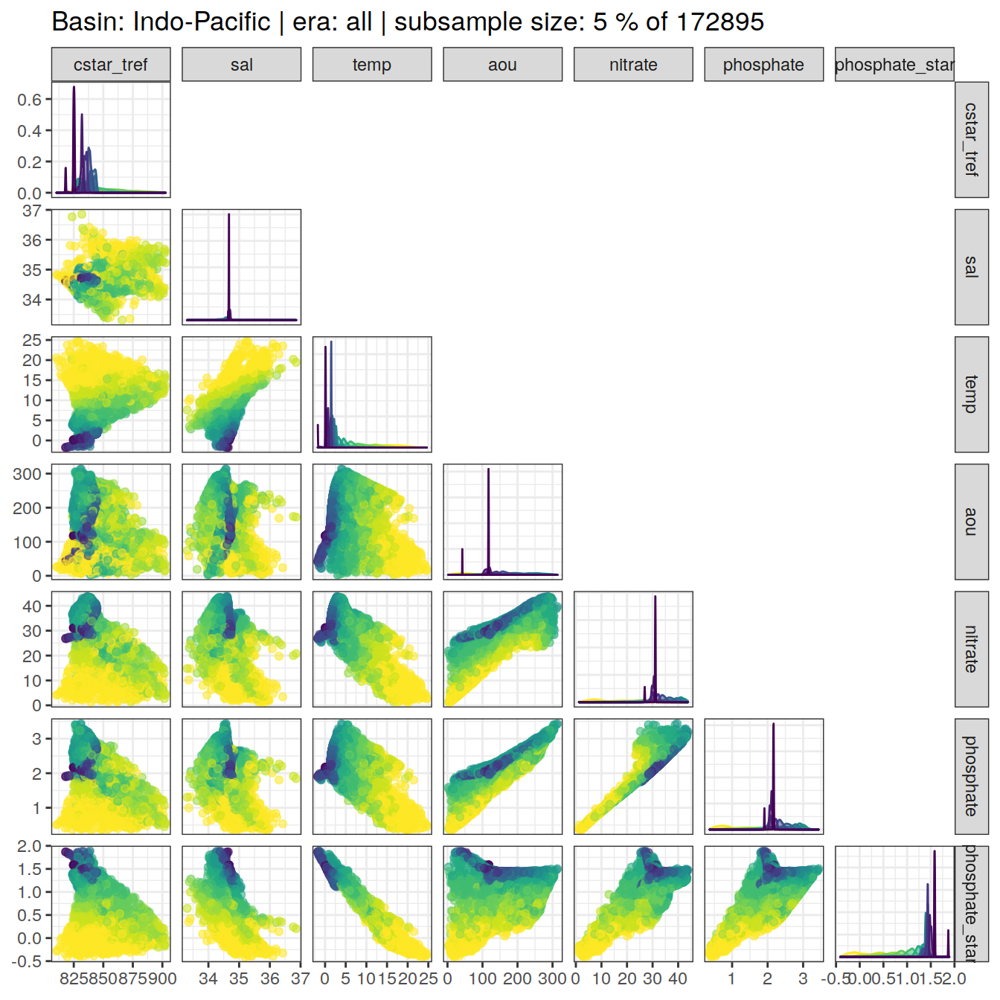

eMLR - assumption testing
Jens Daniel Müller and Donghe Zhu
28 May, 2021
Last updated: 2021-05-28
Checks: 7 0
Knit directory: emlr_mod_v_XXX/
This reproducible R Markdown analysis was created with workflowr (version 1.6.2). The Checks tab describes the reproducibility checks that were applied when the results were created. The Past versions tab lists the development history.
Great! Since the R Markdown file has been committed to the Git repository, you know the exact version of the code that produced these results.
Great job! The global environment was empty. Objects defined in the global environment can affect the analysis in your R Markdown file in unknown ways. For reproduciblity it’s best to always run the code in an empty environment.
The command set.seed(20200707) was run prior to running the code in the R Markdown file. Setting a seed ensures that any results that rely on randomness, e.g. subsampling or permutations, are reproducible.
Great job! Recording the operating system, R version, and package versions is critical for reproducibility.
Nice! There were no cached chunks for this analysis, so you can be confident that you successfully produced the results during this run.
Great job! Using relative paths to the files within your workflowr project makes it easier to run your code on other machines.
Great! You are using Git for version control. Tracking code development and connecting the code version to the results is critical for reproducibility.
The results in this page were generated with repository version fa98c69. See the Past versions tab to see a history of the changes made to the R Markdown and HTML files.
Note that you need to be careful to ensure that all relevant files for the analysis have been committed to Git prior to generating the results (you can use wflow_publish or wflow_git_commit). workflowr only checks the R Markdown file, but you know if there are other scripts or data files that it depends on. Below is the status of the Git repository when the results were generated:
Ignored files:
Ignored: .Rhistory
Ignored: .Rproj.user/
Untracked files:
Untracked: docs_1982-2000_2000-2012_GC_0.6/
Untracked: docs_1982-2000_2000-2012_GV_1.0/
Untracked: docs_1982-2000_2000-2012_RC_3.7/
Untracked: docs_1982-2000_2000-2012_RC_SO_1.7/
Untracked: docs_1982-2000_2000-2012_RV_4.0/
Untracked: docs_1982-2000_2000-2012_RV_SO_1.9/
Untracked: docs_2000-2009_2010-2019_GC_3.1/
Untracked: docs_2000-2009_2010-2019_GV_2.9/
Untracked: docs_2000-2009_2010-2019_RC_0.9/
Untracked: docs_2000-2009_2010-2019_RC_vif20_1.2/
Untracked: docs_2000-2009_2010-2019_RV_0.8/
Untracked: docs_2000-2012_2008-2019_GC_1.6/
Untracked: docs_2000-2012_2008-2019_GV_1.3/
Untracked: docs_2000-2012_2008-2019_RC_0.7/
Untracked: docs_2000-2012_2008-2019_RV_0.6/
Unstaged changes:
Modified: data/auxillary/params_local.rds
Note that any generated files, e.g. HTML, png, CSS, etc., are not included in this status report because it is ok for generated content to have uncommitted changes.
These are the previous versions of the repository in which changes were made to the R Markdown (analysis/eMLR_assumption_testing.Rmd) and HTML (docs/eMLR_assumption_testing.html) files. If you’ve configured a remote Git repository (see ?wflow_git_remote), click on the hyperlinks in the table below to view the files as they were in that past version.
| File | Version | Author | Date | Message |
|---|---|---|---|---|
| html | d50b039 | Donghe-Zhu | 2021-05-28 | Build site. |
| html | 441ebe5 | Donghe-Zhu | 2021-05-28 | Build site. |
| html | 6262ad3 | Donghe-Zhu | 2021-05-28 | Build site. |
| html | a61aa77 | Donghe-Zhu | 2021-05-28 | Build site. |
| html | b8dbce4 | Donghe-Zhu | 2021-05-28 | Build site. |
| html | 94a833e | Donghe-Zhu | 2021-05-27 | Build site. |
| html | 5e0bd64 | Donghe-Zhu | 2021-05-27 | Build site. |
| html | af1eadd | Donghe-Zhu | 2021-05-27 | Build site. |
| html | 9179bfe | Donghe-Zhu | 2021-05-27 | Build site. |
| html | 28cbe5e | Donghe-Zhu | 2021-05-27 | Build site. |
| html | a618f02 | Donghe-Zhu | 2021-05-27 | Build site. |
| html | 4623e38 | Donghe-Zhu | 2021-05-27 | Build site. |
| html | b81bb49 | Donghe-Zhu | 2021-05-27 | Build site. |
| html | 951e188 | Donghe-Zhu | 2021-05-27 | Build site. |
| html | e377833 | Donghe-Zhu | 2021-05-26 | Build site. |
| html | 2705a04 | Donghe-Zhu | 2021-03-28 | Build site. |
| html | cd5f759 | Donghe-Zhu | 2021-03-28 | Build site. |
| html | 75dda4d | Donghe-Zhu | 2021-03-27 | Build site. |
| html | 0b19f6e | Donghe-Zhu | 2021-03-27 | Build site. |
| html | e2704ca | Donghe-Zhu | 2021-03-27 | Build site. |
| html | 3061a0b | Donghe-Zhu | 2021-03-27 | Build site. |
| html | b883157 | Donghe-Zhu | 2021-03-27 | Build site. |
| html | 0c20513 | Donghe-Zhu | 2021-03-26 | Build site. |
| html | d19654d | Donghe-Zhu | 2021-03-26 | Build site. |
| html | 6c53dbf | Donghe-Zhu | 2021-03-25 | Build site. |
| html | 1914a11 | Donghe-Zhu | 2021-03-24 | Build site. |
| html | 8be810e | Donghe-Zhu | 2021-03-23 | Build site. |
| html | bf19764 | Donghe-Zhu | 2021-03-22 | Build site. |
| html | 3ec9d3d | Donghe-Zhu | 2021-03-22 | Build site. |
| html | 134ace1 | Donghe-Zhu | 2021-03-22 | Build site. |
| html | f6d70a4 | Donghe-Zhu | 2021-03-22 | Build site. |
| html | 183443b | Donghe-Zhu | 2021-03-21 | Build site. |
| html | 2e6976b | Donghe-Zhu | 2021-03-21 | Build site. |
| html | 51a42bd | Donghe-Zhu | 2021-03-16 | Build site. |
| html | f745381 | Donghe-Zhu | 2021-03-16 | Build site. |
| html | aecbf75 | Donghe-Zhu | 2021-03-14 | Build site. |
| html | 1b2a0c2 | Donghe-Zhu | 2021-03-14 | Build site. |
| html | 6733e48 | Donghe-Zhu | 2021-03-12 | Build site. |
| html | ba71e6a | Donghe-Zhu | 2021-03-12 | Build site. |
| html | 9dbf5bd | Donghe-Zhu | 2021-03-11 | Build site. |
| html | a49df30 | Donghe-Zhu | 2021-03-11 | Build site. |
| html | b3348a5 | Donghe-Zhu | 2021-03-11 | Build site. |
| html | 1c24ff7 | Donghe-Zhu | 2021-03-10 | Build site. |
| html | 94ce5a8 | Donghe-Zhu | 2021-03-10 | Build site. |
| html | db33928 | Donghe-Zhu | 2021-03-10 | Build site. |
| html | 3d1f470 | Donghe-Zhu | 2021-03-10 | Build site. |
| html | 9b7bc66 | Donghe-Zhu | 2021-03-10 | Build site. |
| html | 4168b43 | Donghe-Zhu | 2021-03-10 | Build site. |
| html | 5365f80 | Donghe-Zhu | 2021-03-10 | Build site. |
| html | 2b6c392 | Donghe-Zhu | 2021-03-10 | Build site. |
| html | 9f58753 | Donghe-Zhu | 2021-03-10 | Build site. |
| html | f2a7146 | Donghe-Zhu | 2021-03-10 | Build site. |
| html | fd528ed | Donghe-Zhu | 2021-03-10 | Build site. |
| html | 9d5a62c | Donghe-Zhu | 2021-03-10 | Build site. |
| html | 5d1e70b | Donghe-Zhu | 2021-03-10 | Build site. |
| html | 2093979 | Donghe-Zhu | 2021-03-10 | Build site. |
| html | b865899 | Donghe-Zhu | 2021-03-10 | Build site. |
| html | cc2a956 | Donghe-Zhu | 2021-03-10 | Build site. |
| html | 60689fb | Donghe-Zhu | 2021-03-10 | Build site. |
| html | 9230b52 | Donghe-Zhu | 2021-03-10 | Build site. |
| html | dba33c8 | Donghe-Zhu | 2021-03-09 | Build site. |
| html | 17f1c4a | Donghe-Zhu | 2021-03-09 | Build site. |
| html | c024d1a | Donghe-Zhu | 2021-03-09 | Build site. |
| html | 02f7242 | Donghe-Zhu | 2021-03-09 | Build site. |
| html | 6f50bc6 | Donghe-Zhu | 2021-03-09 | Build site. |
| html | 1691156 | Donghe-Zhu | 2021-03-08 | Build site. |
| html | c0ceaf8 | Donghe-Zhu | 2021-03-08 | Build site. |
| html | 058e0a1 | Donghe-Zhu | 2021-03-08 | Build site. |
| html | 112dea0 | Donghe-Zhu | 2021-03-08 | Build site. |
| html | 1843412 | Donghe-Zhu | 2021-03-08 | Build site. |
| html | 65b0cef | Donghe-Zhu | 2021-03-07 | Build site. |
| html | 4083a6c | Donghe-Zhu | 2021-03-07 | Build site. |
| html | 3fbbfa4 | Donghe-Zhu | 2021-03-07 | Build site. |
| html | 627c8fb | Donghe-Zhu | 2021-03-07 | Build site. |
| html | 3607f4d | Donghe-Zhu | 2021-03-07 | Build site. |
| html | 9ef3222 | Donghe-Zhu | 2021-03-05 | Build site. |
| html | 8c1e978 | Donghe-Zhu | 2021-03-05 | Build site. |
| html | 865f68c | Donghe-Zhu | 2021-03-05 | Build site. |
| html | ee69bc1 | Donghe-Zhu | 2021-03-05 | Build site. |
| html | a79291f | Donghe-Zhu | 2021-03-05 | Build site. |
| html | e8c6f30 | Donghe-Zhu | 2021-03-04 | Build site. |
| html | 59288fe | Donghe-Zhu | 2021-03-04 | Build site. |
| html | 731abc8 | Donghe-Zhu | 2021-03-04 | Build site. |
| html | e2a5a33 | Donghe-Zhu | 2021-03-04 | Build site. |
| html | c7892c1 | Donghe-Zhu | 2021-03-04 | Build site. |
| html | 924430b | Donghe-Zhu | 2021-03-03 | Build site. |
| html | 0d0bca1 | Donghe-Zhu | 2021-03-03 | Build site. |
| html | cb63c16 | Donghe-Zhu | 2021-03-03 | Build site. |
| html | ffda45a | Donghe-Zhu | 2021-03-03 | Build site. |
| html | 691ba81 | Donghe-Zhu | 2021-03-03 | Build site. |
| html | c5e45a2 | Donghe-Zhu | 2021-03-03 | Build site. |
| html | 89c3e58 | Donghe-Zhu | 2021-03-03 | Build site. |
| html | c407a50 | Donghe-Zhu | 2021-03-03 | Build site. |
| html | c911669 | Donghe-Zhu | 2021-03-03 | Build site. |
| html | b71c719 | Donghe-Zhu | 2021-03-01 | Build site. |
| html | 13666ca | Donghe-Zhu | 2021-03-01 | Build site. |
| html | c6e60fe | Donghe-Zhu | 2021-03-01 | Build site. |
| html | 7a388f7 | Donghe-Zhu | 2021-03-01 | Build site. |
| html | 799e913 | Donghe-Zhu | 2021-03-01 | Build site. |
| html | 66ff99f | Donghe-Zhu | 2021-03-01 | Build site. |
| html | ac9bb7a | Donghe-Zhu | 2021-02-28 | Build site. |
| html | efdc047 | Donghe-Zhu | 2021-02-28 | Build site. |
| html | e9a7418 | Donghe-Zhu | 2021-02-28 | Build site. |
| html | e152917 | Donghe-Zhu | 2021-02-28 | Build site. |
| html | feb991c | Donghe-Zhu | 2021-02-27 | Build site. |
| html | 287123c | Donghe-Zhu | 2021-02-27 | Build site. |
| html | 54d5b5b | Donghe-Zhu | 2021-02-27 | Build site. |
| html | 330f064 | Donghe-Zhu | 2021-02-27 | Build site. |
| html | adbc9bc | Donghe-Zhu | 2021-02-27 | Build site. |
| html | 5937141 | Donghe-Zhu | 2021-02-27 | Build site. |
| html | 4414bbf | Donghe-Zhu | 2021-02-27 | Build site. |
| html | a265efb | Donghe-Zhu | 2021-02-27 | Build site. |
| html | 19edd1e | Donghe-Zhu | 2021-02-27 | Build site. |
| html | f20483f | Donghe-Zhu | 2021-02-26 | Build site. |
| html | 6a2c7b3 | Donghe-Zhu | 2021-02-25 | Build site. |
| html | 02b976d | Donghe-Zhu | 2021-02-24 | Build site. |
| html | 354c224 | Donghe-Zhu | 2021-02-24 | Build site. |
| html | 1a0a88a | Donghe-Zhu | 2021-02-24 | Build site. |
| html | 57f701e | Donghe-Zhu | 2021-02-24 | Build site. |
| html | 06f3149 | Donghe-Zhu | 2021-02-16 | Build site. |
| html | 401eab3 | Donghe-Zhu | 2021-02-15 | Build site. |
| html | e3bba84 | Donghe-Zhu | 2021-02-15 | Build site. |
| html | 5dce4b1 | Donghe-Zhu | 2021-02-15 | Build site. |
| html | 4469a0c | Donghe-Zhu | 2021-02-13 | Build site. |
| html | 5ae6a69 | Donghe-Zhu | 2021-02-10 | Build site. |
| html | 05385dc | Donghe-Zhu | 2021-02-10 | Build site. |
| html | f791ae4 | Donghe-Zhu | 2021-02-09 | Build site. |
| html | f71ae34 | Donghe-Zhu | 2021-02-09 | Build site. |
| html | c011832 | Donghe-Zhu | 2021-02-09 | Build site. |
| html | a145fa7 | Donghe-Zhu | 2021-02-09 | Build site. |
| html | c344e42 | Donghe-Zhu | 2021-02-08 | Build site. |
| html | 2f095d7 | Donghe-Zhu | 2021-02-07 | Build site. |
| html | 2305044 | Donghe-Zhu | 2021-02-07 | Build site. |
| html | 1fad5f1 | Donghe-Zhu | 2021-02-07 | Build site. |
| html | ca03c39 | Donghe-Zhu | 2021-02-07 | Build site. |
| html | e2ffc14 | Donghe-Zhu | 2021-02-05 | Build site. |
| Rmd | 55cdfe6 | Donghe-Zhu | 2021-02-05 | local rebuild |
| html | cd7c52c | Donghe-Zhu | 2021-02-04 | Build site. |
| html | bcf84f4 | Donghe-Zhu | 2021-02-02 | Build site. |
| html | a518739 | Donghe-Zhu | 2021-02-01 | Build site. |
| html | 61666de | Donghe-Zhu | 2021-01-31 | Build site. |
| html | 865b582 | Donghe-Zhu | 2021-01-31 | Build site. |
| html | 3e68089 | Donghe-Zhu | 2021-01-31 | Build site. |
| html | ecf335c | Donghe-Zhu | 2021-01-31 | Build site. |
| html | a618965 | Donghe-Zhu | 2021-01-31 | Build site. |
| html | 59e006e | Donghe-Zhu | 2021-01-31 | Build site. |
| html | a1c8f87 | Donghe-Zhu | 2021-01-31 | Build site. |
| html | ae5c18f | Donghe-Zhu | 2021-01-31 | Build site. |
| html | b50fe52 | Donghe-Zhu | 2021-01-31 | Build site. |
| html | ac99ae5 | jens-daniel-mueller | 2021-01-29 | code review |
| html | b5bdcaf | Donghe-Zhu | 2021-01-29 | Build site. |
| html | 442010d | Donghe-Zhu | 2021-01-29 | Build site. |
| html | 372adf5 | Donghe-Zhu | 2021-01-29 | Build site. |
| html | af8788e | Donghe-Zhu | 2021-01-29 | Build site. |
| html | 21c91c9 | Donghe-Zhu | 2021-01-29 | Build site. |
| html | eded038 | Donghe-Zhu | 2021-01-29 | Build site. |
| html | 541d4dd | Donghe-Zhu | 2021-01-29 | Build site. |
| html | 6a75576 | Donghe-Zhu | 2021-01-28 | Build site. |
| html | 16fba40 | Donghe-Zhu | 2021-01-28 | Build site. |
| html | 12bc567 | Donghe-Zhu | 2021-01-27 | Build site. |
| html | ceed31b | Donghe-Zhu | 2021-01-27 | Build site. |
| html | 342402d | Donghe-Zhu | 2021-01-27 | Build site. |
| html | 5bad5c2 | Donghe-Zhu | 2021-01-27 | Build site. |
| html | 61efb56 | Donghe-Zhu | 2021-01-25 | Build site. |
| html | 48f638e | Donghe-Zhu | 2021-01-25 | Build site. |
| html | c1cec47 | Donghe-Zhu | 2021-01-25 | Build site. |
| html | 05ffb0c | Donghe-Zhu | 2021-01-25 | Build site. |
| html | 8b97165 | Donghe-Zhu | 2021-01-25 | Build site. |
| html | c569946 | Donghe-Zhu | 2021-01-24 | Build site. |
| html | a2f0d56 | Donghe-Zhu | 2021-01-23 | Build site. |
| html | 28509fc | Donghe-Zhu | 2021-01-23 | Build site. |
| html | 4c28e4a | Donghe-Zhu | 2021-01-22 | Build site. |
| html | 24cc264 | jens-daniel-mueller | 2021-01-22 | cleaned /docs before creating copies |
| html | 88eb28f | Donghe-Zhu | 2021-01-21 | Build site. |
| html | 2679490 | Donghe-Zhu | 2021-01-21 | Build site. |
| html | 7891955 | Donghe-Zhu | 2021-01-21 | Build site. |
| html | d4cf1cb | Donghe-Zhu | 2021-01-21 | Build site. |
| html | 1f3e5b6 | jens-daniel-mueller | 2021-01-20 | Build site. |
| html | 0e7bdf1 | jens-daniel-mueller | 2021-01-15 | cleaning template repository |
| html | 73cbef3 | jens-daniel-mueller | 2021-01-15 | Build site. |
| html | 4571843 | jens-daniel-mueller | 2021-01-14 | revision and html deleted for template copying |
| html | 23151cd | jens-daniel-mueller | 2021-01-14 | Build site. |
| html | b3564aa | jens-daniel-mueller | 2021-01-14 | Build site. |
| html | 8d032c3 | jens-daniel-mueller | 2021-01-14 | Build site. |
| html | 022871c | Donghe-Zhu | 2021-01-13 | Build site. |
| Rmd | d44f36f | Donghe-Zhu | 2021-01-13 | reorder analysis final |
| html | 17dee1d | jens-daniel-mueller | 2021-01-13 | Build site. |
| html | a076226 | Donghe-Zhu | 2021-01-11 | Build site. |
| Rmd | 52eff18 | Donghe-Zhu | 2021-01-09 | Implemet model_run and subsetting |
| html | 7cdea0c | jens-daniel-mueller | 2021-01-06 | Build site. |
| html | fa85b93 | jens-daniel-mueller | 2021-01-06 | Build site. |
| html | e5cb81a | Donghe-Zhu | 2021-01-05 | Build site. |
| html | a499f10 | Donghe-Zhu | 2021-01-05 | Build site. |
| Rmd | 715bdb4 | Donghe-Zhu | 2021-01-02 | model modification |
| html | fb8a752 | Donghe-Zhu | 2020-12-23 | Build site. |
| Rmd | 82e3c9c | Donghe-Zhu | 2020-12-23 | first build after creating model template |
| html | 8fae0b2 | Donghe-Zhu | 2020-12-21 | Build site. |
| html | c8b76b3 | jens-daniel-mueller | 2020-12-19 | Build site. |
| Rmd | b5fedce | jens-daniel-mueller | 2020-12-19 | first build after creating model template |
| Rmd | 8e8abf5 | Jens Müller | 2020-12-18 | Initial commit |
1 Required data
Required are:
- cleaned and prepared GLODAP-based synthetic cmorized model subsetting file
GLODAP <-
read_csv(paste(path_version_data,
"GLODAPv2.2020_MLR_fitting_ready.csv",
sep = ""))2 Predictor correlation
The correlation between:
- pairs of seven potential predictor variables and
- C* and seven potential predictor variables
were investigated based on:
- property-property plots and
- calculated correlation coefficients.
2.1 Correlation plots
For an overview, a random subset of data from all eras was plotted separately for both basins, with color indicating neutral density slabs (high density = dark-purple color).
for (i_basin in unique(GLODAP$basin)) {
# i_basin <- unique(GLODAP$basin)[1]
print(
GLODAP %>%
filter(basin == i_basin) %>%
sample_frac(0.05) %>%
ggpairs(columns = c(params_local$MLR_target,
params_local$MLR_predictors),
upper = "blank",
ggplot2::aes(col = gamma_slab, fill = gamma_slab, alpha = 0.01)) +
scale_fill_viridis_d(direction = -1) +
scale_color_viridis_d(direction = -1) +
labs(title = paste("Basin:", i_basin ,"| era: all | subsample size: 5 % of",
nrow(GLODAP %>% filter(basin == i_basin))))
)
}
| Version | Author | Date |
|---|---|---|
| d50b039 | Donghe-Zhu | 2021-05-28 |
| 441ebe5 | Donghe-Zhu | 2021-05-28 |
| 6262ad3 | Donghe-Zhu | 2021-05-28 |
| a61aa77 | Donghe-Zhu | 2021-05-28 |
| b8dbce4 | Donghe-Zhu | 2021-05-28 |
| 94a833e | Donghe-Zhu | 2021-05-27 |
| 5e0bd64 | Donghe-Zhu | 2021-05-27 |
| af1eadd | Donghe-Zhu | 2021-05-27 |
| 9179bfe | Donghe-Zhu | 2021-05-27 |
| 28cbe5e | Donghe-Zhu | 2021-05-27 |
| a618f02 | Donghe-Zhu | 2021-05-27 |
| 4623e38 | Donghe-Zhu | 2021-05-27 |
| b81bb49 | Donghe-Zhu | 2021-05-27 |
| 951e188 | Donghe-Zhu | 2021-05-27 |
| e377833 | Donghe-Zhu | 2021-05-26 |
| 2705a04 | Donghe-Zhu | 2021-03-28 |
| cd5f759 | Donghe-Zhu | 2021-03-28 |
| 75dda4d | Donghe-Zhu | 2021-03-27 |
| 0b19f6e | Donghe-Zhu | 2021-03-27 |
| e2704ca | Donghe-Zhu | 2021-03-27 |
| 3061a0b | Donghe-Zhu | 2021-03-27 |
| b883157 | Donghe-Zhu | 2021-03-27 |
| d19654d | Donghe-Zhu | 2021-03-26 |
| 1914a11 | Donghe-Zhu | 2021-03-24 |
| 8be810e | Donghe-Zhu | 2021-03-23 |
| bf19764 | Donghe-Zhu | 2021-03-22 |
| 3ec9d3d | Donghe-Zhu | 2021-03-22 |
| 134ace1 | Donghe-Zhu | 2021-03-22 |
| f6d70a4 | Donghe-Zhu | 2021-03-22 |
| 183443b | Donghe-Zhu | 2021-03-21 |
| 2e6976b | Donghe-Zhu | 2021-03-21 |
| 51a42bd | Donghe-Zhu | 2021-03-16 |
| f745381 | Donghe-Zhu | 2021-03-16 |
| aecbf75 | Donghe-Zhu | 2021-03-14 |
| 1b2a0c2 | Donghe-Zhu | 2021-03-14 |
| 6733e48 | Donghe-Zhu | 2021-03-12 |
| ba71e6a | Donghe-Zhu | 2021-03-12 |
| 9dbf5bd | Donghe-Zhu | 2021-03-11 |
| a49df30 | Donghe-Zhu | 2021-03-11 |
| b3348a5 | Donghe-Zhu | 2021-03-11 |
| 1c24ff7 | Donghe-Zhu | 2021-03-10 |
| 94ce5a8 | Donghe-Zhu | 2021-03-10 |
| db33928 | Donghe-Zhu | 2021-03-10 |
| 3d1f470 | Donghe-Zhu | 2021-03-10 |
| 9b7bc66 | Donghe-Zhu | 2021-03-10 |
| 5365f80 | Donghe-Zhu | 2021-03-10 |
| 2b6c392 | Donghe-Zhu | 2021-03-10 |
| 9f58753 | Donghe-Zhu | 2021-03-10 |
| 9d5a62c | Donghe-Zhu | 2021-03-10 |
| 5d1e70b | Donghe-Zhu | 2021-03-10 |
| 2093979 | Donghe-Zhu | 2021-03-10 |
| cc2a956 | Donghe-Zhu | 2021-03-10 |
| 17f1c4a | Donghe-Zhu | 2021-03-09 |
| 02f7242 | Donghe-Zhu | 2021-03-09 |
| 1691156 | Donghe-Zhu | 2021-03-08 |
| c0ceaf8 | Donghe-Zhu | 2021-03-08 |
| 112dea0 | Donghe-Zhu | 2021-03-08 |
| 1843412 | Donghe-Zhu | 2021-03-08 |
| 3fbbfa4 | Donghe-Zhu | 2021-03-07 |
| 627c8fb | Donghe-Zhu | 2021-03-07 |
| 8c1e978 | Donghe-Zhu | 2021-03-05 |
| 865f68c | Donghe-Zhu | 2021-03-05 |
| ee69bc1 | Donghe-Zhu | 2021-03-05 |
| a79291f | Donghe-Zhu | 2021-03-05 |
| e8c6f30 | Donghe-Zhu | 2021-03-04 |
| 59288fe | Donghe-Zhu | 2021-03-04 |
| 731abc8 | Donghe-Zhu | 2021-03-04 |
| e2a5a33 | Donghe-Zhu | 2021-03-04 |
| c7892c1 | Donghe-Zhu | 2021-03-04 |
| 924430b | Donghe-Zhu | 2021-03-03 |
| 0d0bca1 | Donghe-Zhu | 2021-03-03 |
| cb63c16 | Donghe-Zhu | 2021-03-03 |
| ffda45a | Donghe-Zhu | 2021-03-03 |
| 691ba81 | Donghe-Zhu | 2021-03-03 |
| c5e45a2 | Donghe-Zhu | 2021-03-03 |
| 89c3e58 | Donghe-Zhu | 2021-03-03 |
| c911669 | Donghe-Zhu | 2021-03-03 |
| 13666ca | Donghe-Zhu | 2021-03-01 |
| 7a388f7 | Donghe-Zhu | 2021-03-01 |
| 799e913 | Donghe-Zhu | 2021-03-01 |
| 66ff99f | Donghe-Zhu | 2021-03-01 |
| ac9bb7a | Donghe-Zhu | 2021-02-28 |
| efdc047 | Donghe-Zhu | 2021-02-28 |
| e9a7418 | Donghe-Zhu | 2021-02-28 |
| 54d5b5b | Donghe-Zhu | 2021-02-27 |
| 330f064 | Donghe-Zhu | 2021-02-27 |
| 5937141 | Donghe-Zhu | 2021-02-27 |
| 4414bbf | Donghe-Zhu | 2021-02-27 |
| a265efb | Donghe-Zhu | 2021-02-27 |
| 19edd1e | Donghe-Zhu | 2021-02-27 |
| f20483f | Donghe-Zhu | 2021-02-26 |
| 6a2c7b3 | Donghe-Zhu | 2021-02-25 |
| 354c224 | Donghe-Zhu | 2021-02-24 |
| 1a0a88a | Donghe-Zhu | 2021-02-24 |
| 57f701e | Donghe-Zhu | 2021-02-24 |
| 06f3149 | Donghe-Zhu | 2021-02-16 |
| 5dce4b1 | Donghe-Zhu | 2021-02-15 |
| 4469a0c | Donghe-Zhu | 2021-02-13 |
| 5ae6a69 | Donghe-Zhu | 2021-02-10 |
| 05385dc | Donghe-Zhu | 2021-02-10 |
| f791ae4 | Donghe-Zhu | 2021-02-09 |
| f71ae34 | Donghe-Zhu | 2021-02-09 |
| a145fa7 | Donghe-Zhu | 2021-02-09 |
| c344e42 | Donghe-Zhu | 2021-02-08 |
| 1fad5f1 | Donghe-Zhu | 2021-02-07 |
| ca03c39 | Donghe-Zhu | 2021-02-07 |
| cd7c52c | Donghe-Zhu | 2021-02-04 |
| bcf84f4 | Donghe-Zhu | 2021-02-02 |
| 865b582 | Donghe-Zhu | 2021-01-31 |
| 3e68089 | Donghe-Zhu | 2021-01-31 |
| ecf335c | Donghe-Zhu | 2021-01-31 |
| a618965 | Donghe-Zhu | 2021-01-31 |
| 59e006e | Donghe-Zhu | 2021-01-31 |
| a1c8f87 | Donghe-Zhu | 2021-01-31 |
| b50fe52 | Donghe-Zhu | 2021-01-31 |
| ac99ae5 | jens-daniel-mueller | 2021-01-29 |
| b5bdcaf | Donghe-Zhu | 2021-01-29 |
| 372adf5 | Donghe-Zhu | 2021-01-29 |
| af8788e | Donghe-Zhu | 2021-01-29 |
| 21c91c9 | Donghe-Zhu | 2021-01-29 |
| eded038 | Donghe-Zhu | 2021-01-29 |
| 541d4dd | Donghe-Zhu | 2021-01-29 |
| 6a75576 | Donghe-Zhu | 2021-01-28 |
| 16fba40 | Donghe-Zhu | 2021-01-28 |
| 12bc567 | Donghe-Zhu | 2021-01-27 |
| ceed31b | Donghe-Zhu | 2021-01-27 |
| 342402d | Donghe-Zhu | 2021-01-27 |
| 5bad5c2 | Donghe-Zhu | 2021-01-27 |
| 61efb56 | Donghe-Zhu | 2021-01-25 |
| 48f638e | Donghe-Zhu | 2021-01-25 |
| c1cec47 | Donghe-Zhu | 2021-01-25 |
| 05ffb0c | Donghe-Zhu | 2021-01-25 |
| 8b97165 | Donghe-Zhu | 2021-01-25 |
| c569946 | Donghe-Zhu | 2021-01-24 |
| a2f0d56 | Donghe-Zhu | 2021-01-23 |
| 28509fc | Donghe-Zhu | 2021-01-23 |
| 4c28e4a | Donghe-Zhu | 2021-01-22 |
| 24cc264 | jens-daniel-mueller | 2021-01-22 |
| 7891955 | Donghe-Zhu | 2021-01-21 |
| d4cf1cb | Donghe-Zhu | 2021-01-21 |
| 1f3e5b6 | jens-daniel-mueller | 2021-01-20 |
| 0e7bdf1 | jens-daniel-mueller | 2021-01-15 |
| 4571843 | jens-daniel-mueller | 2021-01-14 |
| b3564aa | jens-daniel-mueller | 2021-01-14 |
| 8d032c3 | jens-daniel-mueller | 2021-01-14 |
| 17dee1d | jens-daniel-mueller | 2021-01-13 |
| 7cdea0c | jens-daniel-mueller | 2021-01-06 |
| fa85b93 | jens-daniel-mueller | 2021-01-06 |
| e5cb81a | Donghe-Zhu | 2021-01-05 |
| a499f10 | Donghe-Zhu | 2021-01-05 |
| fb8a752 | Donghe-Zhu | 2020-12-23 |
| 8fae0b2 | Donghe-Zhu | 2020-12-21 |
| c8b76b3 | jens-daniel-mueller | 2020-12-19 |

| Version | Author | Date |
|---|---|---|
| d50b039 | Donghe-Zhu | 2021-05-28 |
| 441ebe5 | Donghe-Zhu | 2021-05-28 |
| 6262ad3 | Donghe-Zhu | 2021-05-28 |
| a61aa77 | Donghe-Zhu | 2021-05-28 |
| b8dbce4 | Donghe-Zhu | 2021-05-28 |
| 94a833e | Donghe-Zhu | 2021-05-27 |
| 5e0bd64 | Donghe-Zhu | 2021-05-27 |
| af1eadd | Donghe-Zhu | 2021-05-27 |
| 9179bfe | Donghe-Zhu | 2021-05-27 |
| 28cbe5e | Donghe-Zhu | 2021-05-27 |
| a618f02 | Donghe-Zhu | 2021-05-27 |
| 4623e38 | Donghe-Zhu | 2021-05-27 |
| b81bb49 | Donghe-Zhu | 2021-05-27 |
| 951e188 | Donghe-Zhu | 2021-05-27 |
| e377833 | Donghe-Zhu | 2021-05-26 |
| 2705a04 | Donghe-Zhu | 2021-03-28 |
| cd5f759 | Donghe-Zhu | 2021-03-28 |
| 75dda4d | Donghe-Zhu | 2021-03-27 |
| 0b19f6e | Donghe-Zhu | 2021-03-27 |
| e2704ca | Donghe-Zhu | 2021-03-27 |
| 3061a0b | Donghe-Zhu | 2021-03-27 |
| b883157 | Donghe-Zhu | 2021-03-27 |
| d19654d | Donghe-Zhu | 2021-03-26 |
| 1914a11 | Donghe-Zhu | 2021-03-24 |
| 8be810e | Donghe-Zhu | 2021-03-23 |
| bf19764 | Donghe-Zhu | 2021-03-22 |
| 3ec9d3d | Donghe-Zhu | 2021-03-22 |
| 134ace1 | Donghe-Zhu | 2021-03-22 |
| f6d70a4 | Donghe-Zhu | 2021-03-22 |
| 183443b | Donghe-Zhu | 2021-03-21 |
| 2e6976b | Donghe-Zhu | 2021-03-21 |
| 51a42bd | Donghe-Zhu | 2021-03-16 |
| f745381 | Donghe-Zhu | 2021-03-16 |
| aecbf75 | Donghe-Zhu | 2021-03-14 |
| 1b2a0c2 | Donghe-Zhu | 2021-03-14 |
| 6733e48 | Donghe-Zhu | 2021-03-12 |
| ba71e6a | Donghe-Zhu | 2021-03-12 |
| 9dbf5bd | Donghe-Zhu | 2021-03-11 |
| a49df30 | Donghe-Zhu | 2021-03-11 |
| b3348a5 | Donghe-Zhu | 2021-03-11 |
| 1c24ff7 | Donghe-Zhu | 2021-03-10 |
| 94ce5a8 | Donghe-Zhu | 2021-03-10 |
| db33928 | Donghe-Zhu | 2021-03-10 |
| 3d1f470 | Donghe-Zhu | 2021-03-10 |
| 9b7bc66 | Donghe-Zhu | 2021-03-10 |
| 5365f80 | Donghe-Zhu | 2021-03-10 |
| 9d5a62c | Donghe-Zhu | 2021-03-10 |
| 5d1e70b | Donghe-Zhu | 2021-03-10 |
| 2093979 | Donghe-Zhu | 2021-03-10 |
| cc2a956 | Donghe-Zhu | 2021-03-10 |
| 17f1c4a | Donghe-Zhu | 2021-03-09 |
| 02f7242 | Donghe-Zhu | 2021-03-09 |
| 1691156 | Donghe-Zhu | 2021-03-08 |
| c0ceaf8 | Donghe-Zhu | 2021-03-08 |
| 058e0a1 | Donghe-Zhu | 2021-03-08 |
| 112dea0 | Donghe-Zhu | 2021-03-08 |
| 1843412 | Donghe-Zhu | 2021-03-08 |
| 3fbbfa4 | Donghe-Zhu | 2021-03-07 |
| 627c8fb | Donghe-Zhu | 2021-03-07 |
| 8c1e978 | Donghe-Zhu | 2021-03-05 |
| 865f68c | Donghe-Zhu | 2021-03-05 |
| ee69bc1 | Donghe-Zhu | 2021-03-05 |
| a79291f | Donghe-Zhu | 2021-03-05 |
| e8c6f30 | Donghe-Zhu | 2021-03-04 |
| 59288fe | Donghe-Zhu | 2021-03-04 |
| 731abc8 | Donghe-Zhu | 2021-03-04 |
| e2a5a33 | Donghe-Zhu | 2021-03-04 |
| c7892c1 | Donghe-Zhu | 2021-03-04 |
| 924430b | Donghe-Zhu | 2021-03-03 |
| 0d0bca1 | Donghe-Zhu | 2021-03-03 |
| cb63c16 | Donghe-Zhu | 2021-03-03 |
| 691ba81 | Donghe-Zhu | 2021-03-03 |
| c5e45a2 | Donghe-Zhu | 2021-03-03 |
| 89c3e58 | Donghe-Zhu | 2021-03-03 |
| c911669 | Donghe-Zhu | 2021-03-03 |
| 13666ca | Donghe-Zhu | 2021-03-01 |
| 7a388f7 | Donghe-Zhu | 2021-03-01 |
| 799e913 | Donghe-Zhu | 2021-03-01 |
| 66ff99f | Donghe-Zhu | 2021-03-01 |
| ac9bb7a | Donghe-Zhu | 2021-02-28 |
| efdc047 | Donghe-Zhu | 2021-02-28 |
| e9a7418 | Donghe-Zhu | 2021-02-28 |
| 54d5b5b | Donghe-Zhu | 2021-02-27 |
| 330f064 | Donghe-Zhu | 2021-02-27 |
| 5937141 | Donghe-Zhu | 2021-02-27 |
| 4414bbf | Donghe-Zhu | 2021-02-27 |
| a265efb | Donghe-Zhu | 2021-02-27 |
| 19edd1e | Donghe-Zhu | 2021-02-27 |
| f20483f | Donghe-Zhu | 2021-02-26 |
| 6a2c7b3 | Donghe-Zhu | 2021-02-25 |
| 354c224 | Donghe-Zhu | 2021-02-24 |
| 1a0a88a | Donghe-Zhu | 2021-02-24 |
| 57f701e | Donghe-Zhu | 2021-02-24 |
| 06f3149 | Donghe-Zhu | 2021-02-16 |
| 5dce4b1 | Donghe-Zhu | 2021-02-15 |
| 4469a0c | Donghe-Zhu | 2021-02-13 |
| 5ae6a69 | Donghe-Zhu | 2021-02-10 |
| 05385dc | Donghe-Zhu | 2021-02-10 |
| f791ae4 | Donghe-Zhu | 2021-02-09 |
| f71ae34 | Donghe-Zhu | 2021-02-09 |
| a145fa7 | Donghe-Zhu | 2021-02-09 |
| c344e42 | Donghe-Zhu | 2021-02-08 |
| 1fad5f1 | Donghe-Zhu | 2021-02-07 |
| ca03c39 | Donghe-Zhu | 2021-02-07 |
| cd7c52c | Donghe-Zhu | 2021-02-04 |
| bcf84f4 | Donghe-Zhu | 2021-02-02 |
| 865b582 | Donghe-Zhu | 2021-01-31 |
| 3e68089 | Donghe-Zhu | 2021-01-31 |
| ecf335c | Donghe-Zhu | 2021-01-31 |
| a618965 | Donghe-Zhu | 2021-01-31 |
| 59e006e | Donghe-Zhu | 2021-01-31 |
| a1c8f87 | Donghe-Zhu | 2021-01-31 |
| ae5c18f | Donghe-Zhu | 2021-01-31 |
| b50fe52 | Donghe-Zhu | 2021-01-31 |
| ac99ae5 | jens-daniel-mueller | 2021-01-29 |
| b5bdcaf | Donghe-Zhu | 2021-01-29 |
| 372adf5 | Donghe-Zhu | 2021-01-29 |
| af8788e | Donghe-Zhu | 2021-01-29 |
| 21c91c9 | Donghe-Zhu | 2021-01-29 |
| eded038 | Donghe-Zhu | 2021-01-29 |
| 541d4dd | Donghe-Zhu | 2021-01-29 |
| 6a75576 | Donghe-Zhu | 2021-01-28 |
| 16fba40 | Donghe-Zhu | 2021-01-28 |
| 12bc567 | Donghe-Zhu | 2021-01-27 |
| ceed31b | Donghe-Zhu | 2021-01-27 |
| 342402d | Donghe-Zhu | 2021-01-27 |
| 5bad5c2 | Donghe-Zhu | 2021-01-27 |
| 61efb56 | Donghe-Zhu | 2021-01-25 |
| 48f638e | Donghe-Zhu | 2021-01-25 |
| c1cec47 | Donghe-Zhu | 2021-01-25 |
| 05ffb0c | Donghe-Zhu | 2021-01-25 |
| 8b97165 | Donghe-Zhu | 2021-01-25 |
| c569946 | Donghe-Zhu | 2021-01-24 |
| a2f0d56 | Donghe-Zhu | 2021-01-23 |
| 28509fc | Donghe-Zhu | 2021-01-23 |
| 4c28e4a | Donghe-Zhu | 2021-01-22 |
| 24cc264 | jens-daniel-mueller | 2021-01-22 |
| 7891955 | Donghe-Zhu | 2021-01-21 |
| d4cf1cb | Donghe-Zhu | 2021-01-21 |
| 1f3e5b6 | jens-daniel-mueller | 2021-01-20 |
| 0e7bdf1 | jens-daniel-mueller | 2021-01-15 |
| 4571843 | jens-daniel-mueller | 2021-01-14 |
| b3564aa | jens-daniel-mueller | 2021-01-14 |
| 8d032c3 | jens-daniel-mueller | 2021-01-14 |
| 17dee1d | jens-daniel-mueller | 2021-01-13 |
| 7cdea0c | jens-daniel-mueller | 2021-01-06 |
| fa85b93 | jens-daniel-mueller | 2021-01-06 |
| e5cb81a | Donghe-Zhu | 2021-01-05 |
| a499f10 | Donghe-Zhu | 2021-01-05 |
| fb8a752 | Donghe-Zhu | 2020-12-23 |
| 8fae0b2 | Donghe-Zhu | 2020-12-21 |
| c8b76b3 | jens-daniel-mueller | 2020-12-19 |
Individual correlation plots for each basin, era and neutral density (gamma) slab are available at:
/nfs/kryo/work/jenmueller/emlr_cant/model/v_XXX/figures/Observations_correlation/
if (params_local$plot_all_figures == "y") {
for (i_basin in unique(GLODAP$basin)) {
for (i_era in unique(GLODAP$era)) {
#i_basin <- unique(GLODAP$basin)[1]
#i_era <- unique(GLODAP$era)[1]
GLODAP_basin_era <- GLODAP %>%
filter(basin == i_basin,
era == i_era)
for (i_gamma_slab in unique(GLODAP_basin_era$gamma_slab)) {
#i_gamma_slab <- unique(GLODAP_basin_era$gamma_slab)[14]
GLODAP_basin_era_slab <- GLODAP_basin_era %>%
filter(gamma_slab == i_gamma_slab)
if (nrow(GLODAP_basin_era_slab) > 2) {
GLODAP_highlight <- GLODAP_basin_era %>%
mutate(gamma_highlight = if_else(gamma_slab == i_gamma_slab,
"in", "out")) %>%
arrange(desc(gamma_highlight))
p <- GLODAP_highlight %>%
ggpairs(
columns = c(
params_local$MLR_target,
params_local$MLR_predictors
),
ggplot2::aes(
col = gamma_highlight,
fill = gamma_highlight,
alpha = 0.01
)
) +
scale_fill_manual(values = c("red", "grey")) +
scale_color_manual(values = c("red", "grey")) +
labs(
title = paste(
i_era,
"|",
i_basin,
"| Gamma slab",
i_gamma_slab,
"| # obs total",
nrow(GLODAP_basin_era),
"| # obs slab",
nrow(GLODAP_highlight %>%
filter(gamma_highlight == "in"))
)
)
png(
filename = paste(
path_version_figures,
"Observations_correlation/",
paste(
"Predictor_correlation",
i_era,
i_basin,
i_gamma_slab,
".png",
sep = "_"
),
sep = ""
),
width = 12,
height = 12,
units = "in",
res = 300
)
print(p)
dev.off()
}
}
}
}
rm(GLODAP_basin_era, GLODAP_basin_era_slab)
}2.2 Correlation assessment
2.2.1 Calculation of correlation coeffcients
Correlation coefficients were calculated individually within each slabs, era and basin.
for (i_basin in unique(GLODAP$basin)) {
for (i_era in unique(GLODAP$era)) {
# i_basin <- unique(GLODAP$basin)[1]
# i_era <- unique(GLODAP$era)[1]
GLODAP_basin_era <- GLODAP %>%
filter(basin == i_basin,
era == i_era) %>%
select(basin,
era,
gamma_slab,
params_local$MLR_target,
params_local$MLR_predictors)
for (i_gamma_slab in unique(GLODAP_basin_era$gamma_slab)) {
# i_gamma_slab <- unique(GLODAP_basin_era$gamma_slab)[5]
print(i_gamma_slab)
GLODAP_basin_era_slab <- GLODAP_basin_era %>%
filter(gamma_slab == i_gamma_slab)
# calculate correlation table
cor_target_predictor_temp <- GLODAP_basin_era_slab %>%
select(-c(basin, era, gamma_slab)) %>%
correlate() %>%
focus(params_local$MLR_target) %>%
mutate(basin = i_basin,
era = i_era,
gamma_slab = i_gamma_slab)
if (exists("cor_target_predictor")) {
cor_target_predictor <-
bind_rows(cor_target_predictor, cor_target_predictor_temp)
}
if (!exists("cor_target_predictor")) {
cor_target_predictor <- cor_target_predictor_temp
}
cor_predictors_temp <- GLODAP_basin_era_slab %>%
select(-c(basin, era, gamma_slab)) %>%
correlate() %>%
shave %>%
stretch() %>%
filter(!is.na(r),
x != params_local$MLR_target,
y != params_local$MLR_target) %>%
mutate(pair = paste(x, y, sep = " + ")) %>%
select(-c(x, y)) %>%
mutate(basin = i_basin,
era = i_era,
gamma_slab = i_gamma_slab)
if (exists("cor_predictors")) {
cor_predictors <- bind_rows(cor_predictors, cor_predictors_temp)
}
if (!exists("cor_predictors")) {
cor_predictors <- cor_predictors_temp
}
}
}
}
rm(cor_predictors_temp, cor_target_predictor_temp,
i_gamma_slab, i_era, i_basin,
GLODAP_basin_era, GLODAP_basin_era_slab)2.2.2 Predictor pairs
Below, the range of correlations coefficients for each predictor pair is plotted per basin (facet) and density slab (color). Note that the range indicates the min and max values of in total 3 calculated coefficients (one per era).
# calculate min, max, mean across all eras
cor_predictors_stats <- cor_predictors %>%
group_by(pair, basin, gamma_slab) %>%
summarise(mean_r = mean(r),
min_r = min(r),
max_r = max(r)) %>%
ungroup()
# plot figure
cor_predictors_stats %>%
mutate(pair = reorder(pair, mean_r)) %>%
ggplot() +
geom_vline(xintercept = c(-0.9, 0.9), col = "red") +
geom_vline(xintercept = 0) +
geom_linerange(
aes(y = pair, xmin = min_r, xmax = max_r, col = gamma_slab),
position = position_dodge(width = 0.6)) +
facet_wrap(~basin) +
scale_color_viridis_d(direction = -1) +
labs(x = "correlation coefficient", y = "") +
theme(legend.position = "top")
| Version | Author | Date |
|---|---|---|
| d50b039 | Donghe-Zhu | 2021-05-28 |
| 441ebe5 | Donghe-Zhu | 2021-05-28 |
| 6262ad3 | Donghe-Zhu | 2021-05-28 |
| a61aa77 | Donghe-Zhu | 2021-05-28 |
| b8dbce4 | Donghe-Zhu | 2021-05-28 |
| 94a833e | Donghe-Zhu | 2021-05-27 |
| 5e0bd64 | Donghe-Zhu | 2021-05-27 |
| af1eadd | Donghe-Zhu | 2021-05-27 |
| 9179bfe | Donghe-Zhu | 2021-05-27 |
| 28cbe5e | Donghe-Zhu | 2021-05-27 |
| a618f02 | Donghe-Zhu | 2021-05-27 |
| 4623e38 | Donghe-Zhu | 2021-05-27 |
| b81bb49 | Donghe-Zhu | 2021-05-27 |
| 951e188 | Donghe-Zhu | 2021-05-27 |
| e377833 | Donghe-Zhu | 2021-05-26 |
| 2705a04 | Donghe-Zhu | 2021-03-28 |
| cd5f759 | Donghe-Zhu | 2021-03-28 |
| 75dda4d | Donghe-Zhu | 2021-03-27 |
| 0b19f6e | Donghe-Zhu | 2021-03-27 |
| e2704ca | Donghe-Zhu | 2021-03-27 |
| 3061a0b | Donghe-Zhu | 2021-03-27 |
| b883157 | Donghe-Zhu | 2021-03-27 |
| d19654d | Donghe-Zhu | 2021-03-26 |
| 1914a11 | Donghe-Zhu | 2021-03-24 |
| 8be810e | Donghe-Zhu | 2021-03-23 |
| bf19764 | Donghe-Zhu | 2021-03-22 |
| 3ec9d3d | Donghe-Zhu | 2021-03-22 |
| 134ace1 | Donghe-Zhu | 2021-03-22 |
| f6d70a4 | Donghe-Zhu | 2021-03-22 |
| 183443b | Donghe-Zhu | 2021-03-21 |
| 2e6976b | Donghe-Zhu | 2021-03-21 |
| 51a42bd | Donghe-Zhu | 2021-03-16 |
| f745381 | Donghe-Zhu | 2021-03-16 |
| aecbf75 | Donghe-Zhu | 2021-03-14 |
| 1b2a0c2 | Donghe-Zhu | 2021-03-14 |
| 6733e48 | Donghe-Zhu | 2021-03-12 |
| ba71e6a | Donghe-Zhu | 2021-03-12 |
| 9dbf5bd | Donghe-Zhu | 2021-03-11 |
| a49df30 | Donghe-Zhu | 2021-03-11 |
| b3348a5 | Donghe-Zhu | 2021-03-11 |
| 1c24ff7 | Donghe-Zhu | 2021-03-10 |
| 94ce5a8 | Donghe-Zhu | 2021-03-10 |
| db33928 | Donghe-Zhu | 2021-03-10 |
| 3d1f470 | Donghe-Zhu | 2021-03-10 |
| 9b7bc66 | Donghe-Zhu | 2021-03-10 |
| 5365f80 | Donghe-Zhu | 2021-03-10 |
| 2b6c392 | Donghe-Zhu | 2021-03-10 |
| 9f58753 | Donghe-Zhu | 2021-03-10 |
| 9d5a62c | Donghe-Zhu | 2021-03-10 |
| 5d1e70b | Donghe-Zhu | 2021-03-10 |
| 2093979 | Donghe-Zhu | 2021-03-10 |
| cc2a956 | Donghe-Zhu | 2021-03-10 |
| 17f1c4a | Donghe-Zhu | 2021-03-09 |
| 02f7242 | Donghe-Zhu | 2021-03-09 |
| 1691156 | Donghe-Zhu | 2021-03-08 |
| c0ceaf8 | Donghe-Zhu | 2021-03-08 |
| 058e0a1 | Donghe-Zhu | 2021-03-08 |
| 112dea0 | Donghe-Zhu | 2021-03-08 |
| 1843412 | Donghe-Zhu | 2021-03-08 |
| 3fbbfa4 | Donghe-Zhu | 2021-03-07 |
| 627c8fb | Donghe-Zhu | 2021-03-07 |
| 8c1e978 | Donghe-Zhu | 2021-03-05 |
| 865f68c | Donghe-Zhu | 2021-03-05 |
| 59288fe | Donghe-Zhu | 2021-03-04 |
| 731abc8 | Donghe-Zhu | 2021-03-04 |
| e2a5a33 | Donghe-Zhu | 2021-03-04 |
| c7892c1 | Donghe-Zhu | 2021-03-04 |
| 924430b | Donghe-Zhu | 2021-03-03 |
| 0d0bca1 | Donghe-Zhu | 2021-03-03 |
| cb63c16 | Donghe-Zhu | 2021-03-03 |
| ffda45a | Donghe-Zhu | 2021-03-03 |
| 691ba81 | Donghe-Zhu | 2021-03-03 |
| c5e45a2 | Donghe-Zhu | 2021-03-03 |
| 89c3e58 | Donghe-Zhu | 2021-03-03 |
| c911669 | Donghe-Zhu | 2021-03-03 |
| 13666ca | Donghe-Zhu | 2021-03-01 |
| 7a388f7 | Donghe-Zhu | 2021-03-01 |
| 799e913 | Donghe-Zhu | 2021-03-01 |
| 66ff99f | Donghe-Zhu | 2021-03-01 |
| ac9bb7a | Donghe-Zhu | 2021-02-28 |
| efdc047 | Donghe-Zhu | 2021-02-28 |
| e9a7418 | Donghe-Zhu | 2021-02-28 |
| 54d5b5b | Donghe-Zhu | 2021-02-27 |
| 330f064 | Donghe-Zhu | 2021-02-27 |
| 5937141 | Donghe-Zhu | 2021-02-27 |
| 4414bbf | Donghe-Zhu | 2021-02-27 |
| a265efb | Donghe-Zhu | 2021-02-27 |
| 19edd1e | Donghe-Zhu | 2021-02-27 |
| f20483f | Donghe-Zhu | 2021-02-26 |
| 6a2c7b3 | Donghe-Zhu | 2021-02-25 |
| 354c224 | Donghe-Zhu | 2021-02-24 |
| 1a0a88a | Donghe-Zhu | 2021-02-24 |
| 57f701e | Donghe-Zhu | 2021-02-24 |
| 06f3149 | Donghe-Zhu | 2021-02-16 |
| 5dce4b1 | Donghe-Zhu | 2021-02-15 |
| 4469a0c | Donghe-Zhu | 2021-02-13 |
| 5ae6a69 | Donghe-Zhu | 2021-02-10 |
| 05385dc | Donghe-Zhu | 2021-02-10 |
| f791ae4 | Donghe-Zhu | 2021-02-09 |
| f71ae34 | Donghe-Zhu | 2021-02-09 |
| a145fa7 | Donghe-Zhu | 2021-02-09 |
| c344e42 | Donghe-Zhu | 2021-02-08 |
| 1fad5f1 | Donghe-Zhu | 2021-02-07 |
| ca03c39 | Donghe-Zhu | 2021-02-07 |
| cd7c52c | Donghe-Zhu | 2021-02-04 |
| bcf84f4 | Donghe-Zhu | 2021-02-02 |
| 865b582 | Donghe-Zhu | 2021-01-31 |
| 3e68089 | Donghe-Zhu | 2021-01-31 |
| ecf335c | Donghe-Zhu | 2021-01-31 |
| a618965 | Donghe-Zhu | 2021-01-31 |
| 59e006e | Donghe-Zhu | 2021-01-31 |
| a1c8f87 | Donghe-Zhu | 2021-01-31 |
| ae5c18f | Donghe-Zhu | 2021-01-31 |
| b50fe52 | Donghe-Zhu | 2021-01-31 |
| ac99ae5 | jens-daniel-mueller | 2021-01-29 |
| b5bdcaf | Donghe-Zhu | 2021-01-29 |
| 372adf5 | Donghe-Zhu | 2021-01-29 |
| af8788e | Donghe-Zhu | 2021-01-29 |
| 21c91c9 | Donghe-Zhu | 2021-01-29 |
| eded038 | Donghe-Zhu | 2021-01-29 |
| 541d4dd | Donghe-Zhu | 2021-01-29 |
| 6a75576 | Donghe-Zhu | 2021-01-28 |
| 16fba40 | Donghe-Zhu | 2021-01-28 |
| 12bc567 | Donghe-Zhu | 2021-01-27 |
| ceed31b | Donghe-Zhu | 2021-01-27 |
| 342402d | Donghe-Zhu | 2021-01-27 |
| 5bad5c2 | Donghe-Zhu | 2021-01-27 |
| 61efb56 | Donghe-Zhu | 2021-01-25 |
| 48f638e | Donghe-Zhu | 2021-01-25 |
| c1cec47 | Donghe-Zhu | 2021-01-25 |
| 05ffb0c | Donghe-Zhu | 2021-01-25 |
| 8b97165 | Donghe-Zhu | 2021-01-25 |
| c569946 | Donghe-Zhu | 2021-01-24 |
| a2f0d56 | Donghe-Zhu | 2021-01-23 |
| 28509fc | Donghe-Zhu | 2021-01-23 |
| 4c28e4a | Donghe-Zhu | 2021-01-22 |
| 24cc264 | jens-daniel-mueller | 2021-01-22 |
| 7891955 | Donghe-Zhu | 2021-01-21 |
| d4cf1cb | Donghe-Zhu | 2021-01-21 |
| 1f3e5b6 | jens-daniel-mueller | 2021-01-20 |
| 0e7bdf1 | jens-daniel-mueller | 2021-01-15 |
| 4571843 | jens-daniel-mueller | 2021-01-14 |
| b3564aa | jens-daniel-mueller | 2021-01-14 |
| 8d032c3 | jens-daniel-mueller | 2021-01-14 |
| 17dee1d | jens-daniel-mueller | 2021-01-13 |
| e5cb81a | Donghe-Zhu | 2021-01-05 |
| a499f10 | Donghe-Zhu | 2021-01-05 |
| 8fae0b2 | Donghe-Zhu | 2020-12-21 |
| c8b76b3 | jens-daniel-mueller | 2020-12-19 |
# print table
kable(cor_predictors_stats) %>%
add_header_above() %>%
kable_styling() %>%
scroll_box(width = "100%", height = "400px")| pair | basin | gamma_slab | mean_r | min_r | max_r |
|---|---|---|---|---|---|
| aou + nitrate | Atlantic | (-Inf,26] | 0.8413383 | 0.7918526 | 0.9195398 |
| aou + nitrate | Atlantic | (26,26.5] | 0.8815468 | 0.8695011 | 0.8914853 |
| aou + nitrate | Atlantic | (26.5,26.75] | 0.9694205 | 0.9684129 | 0.9702091 |
| aou + nitrate | Atlantic | (26.75,27] | 0.9843333 | 0.9785257 | 0.9875952 |
| aou + nitrate | Atlantic | (27,27.25] | 0.9642162 | 0.9582216 | 0.9682290 |
| aou + nitrate | Atlantic | (27.25,27.5] | 0.8710661 | 0.8683042 | 0.8746350 |
| aou + nitrate | Atlantic | (27.5,27.75] | 0.6589095 | 0.6365958 | 0.6766025 |
| aou + nitrate | Atlantic | (27.75,27.85] | 0.4248408 | 0.4073399 | 0.4585993 |
| aou + nitrate | Atlantic | (27.85,27.95] | 0.1885358 | 0.1522964 | 0.2519899 |
| aou + nitrate | Atlantic | (27.95,28.05] | 0.4851897 | 0.4461399 | 0.5488313 |
| aou + nitrate | Atlantic | (28.05,28.1] | 0.8380546 | 0.8104657 | 0.8803616 |
| aou + nitrate | Atlantic | (28.1,28.15] | 0.8914998 | 0.8699589 | 0.9099837 |
| aou + nitrate | Atlantic | (28.15,28.2] | 0.9467070 | 0.9388308 | 0.9574462 |
| aou + nitrate | Atlantic | (28.2, Inf] | 0.9175737 | 0.9132314 | 0.9198337 |
| aou + nitrate | Indo-Pacific | (-Inf,26] | 0.9353375 | 0.9252414 | 0.9420620 |
| aou + nitrate | Indo-Pacific | (26,26.5] | 0.8701644 | 0.8680941 | 0.8740634 |
| aou + nitrate | Indo-Pacific | (26.5,26.75] | 0.7908353 | 0.7663228 | 0.8124443 |
| aou + nitrate | Indo-Pacific | (26.75,27] | 0.8490840 | 0.8439990 | 0.8591594 |
| aou + nitrate | Indo-Pacific | (27,27.25] | 0.9225235 | 0.9199647 | 0.9255215 |
| aou + nitrate | Indo-Pacific | (27.25,27.5] | 0.9494103 | 0.9454942 | 0.9528114 |
| aou + nitrate | Indo-Pacific | (27.5,27.75] | 0.9744548 | 0.9728854 | 0.9774218 |
| aou + nitrate | Indo-Pacific | (27.75,27.85] | 0.9930030 | 0.9928598 | 0.9931231 |
| aou + nitrate | Indo-Pacific | (27.85,27.95] | 0.9922581 | 0.9913334 | 0.9928812 |
| aou + nitrate | Indo-Pacific | (27.95,28.05] | 0.9919009 | 0.9912581 | 0.9928634 |
| aou + nitrate | Indo-Pacific | (28.05,28.1] | 0.9906361 | 0.9902762 | 0.9910712 |
| aou + nitrate | Indo-Pacific | (28.1,28.2] | 0.9886307 | 0.9883811 | 0.9888026 |
| aou + nitrate | Indo-Pacific | (28.2,28.3] | 0.9870896 | 0.9866711 | 0.9876651 |
| aou + nitrate | Indo-Pacific | (28.3, Inf] | 0.9037617 | 0.8883663 | 0.9157838 |
| aou + phosphate | Atlantic | (-Inf,26] | 0.9332333 | 0.8955516 | 0.9609379 |
| aou + phosphate | Atlantic | (26,26.5] | 0.8824826 | 0.8666801 | 0.8990538 |
| aou + phosphate | Atlantic | (26.5,26.75] | 0.9355474 | 0.9327120 | 0.9371844 |
| aou + phosphate | Atlantic | (26.75,27] | 0.9610197 | 0.9583395 | 0.9640946 |
| aou + phosphate | Atlantic | (27,27.25] | 0.9263722 | 0.9244241 | 0.9275495 |
| aou + phosphate | Atlantic | (27.25,27.5] | 0.8114337 | 0.8080819 | 0.8151802 |
| aou + phosphate | Atlantic | (27.5,27.75] | 0.5837090 | 0.5567723 | 0.6056397 |
| aou + phosphate | Atlantic | (27.75,27.85] | 0.3440416 | 0.3224766 | 0.3812352 |
| aou + phosphate | Atlantic | (27.85,27.95] | 0.1397763 | 0.1029982 | 0.2046113 |
| aou + phosphate | Atlantic | (27.95,28.05] | 0.4661304 | 0.4276584 | 0.5284061 |
| aou + phosphate | Atlantic | (28.05,28.1] | 0.8323882 | 0.8044993 | 0.8751062 |
| aou + phosphate | Atlantic | (28.1,28.15] | 0.8874623 | 0.8650425 | 0.9065417 |
| aou + phosphate | Atlantic | (28.15,28.2] | 0.9493104 | 0.9412724 | 0.9601385 |
| aou + phosphate | Atlantic | (28.2, Inf] | 0.9034784 | 0.8978848 | 0.9084468 |
| aou + phosphate | Indo-Pacific | (-Inf,26] | 0.9668204 | 0.9634657 | 0.9691083 |
| aou + phosphate | Indo-Pacific | (26,26.5] | 0.9604497 | 0.9596257 | 0.9610203 |
| aou + phosphate | Indo-Pacific | (26.5,26.75] | 0.9706831 | 0.9667665 | 0.9732139 |
| aou + phosphate | Indo-Pacific | (26.75,27] | 0.9762872 | 0.9750091 | 0.9777467 |
| aou + phosphate | Indo-Pacific | (27,27.25] | 0.9830786 | 0.9824377 | 0.9838625 |
| aou + phosphate | Indo-Pacific | (27.25,27.5] | 0.9871515 | 0.9870070 | 0.9872359 |
| aou + phosphate | Indo-Pacific | (27.5,27.75] | 0.9899812 | 0.9897763 | 0.9903508 |
| aou + phosphate | Indo-Pacific | (27.75,27.85] | 0.9952196 | 0.9949958 | 0.9954591 |
| aou + phosphate | Indo-Pacific | (27.85,27.95] | 0.9945304 | 0.9937973 | 0.9951454 |
| aou + phosphate | Indo-Pacific | (27.95,28.05] | 0.9935770 | 0.9930605 | 0.9942074 |
| aou + phosphate | Indo-Pacific | (28.05,28.1] | 0.9935844 | 0.9933359 | 0.9938621 |
| aou + phosphate | Indo-Pacific | (28.1,28.2] | 0.9928227 | 0.9926227 | 0.9930419 |
| aou + phosphate | Indo-Pacific | (28.2,28.3] | 0.9929158 | 0.9928785 | 0.9929642 |
| aou + phosphate | Indo-Pacific | (28.3, Inf] | 0.8887602 | 0.8683337 | 0.9035091 |
| aou + phosphate_star | Atlantic | (-Inf,26] | 0.1789311 | 0.1685337 | 0.1913260 |
| aou + phosphate_star | Atlantic | (26,26.5] | 0.3916805 | 0.3568280 | 0.4258516 |
| aou + phosphate_star | Atlantic | (26.5,26.75] | 0.2116791 | 0.1906473 | 0.2306513 |
| aou + phosphate_star | Atlantic | (26.75,27] | -0.0837071 | -0.1302179 | -0.0359684 |
| aou + phosphate_star | Atlantic | (27,27.25] | -0.0058416 | -0.0105362 | -0.0033988 |
| aou + phosphate_star | Atlantic | (27.25,27.5] | -0.0834105 | -0.0894111 | -0.0715505 |
| aou + phosphate_star | Atlantic | (27.5,27.75] | -0.2826521 | -0.3244997 | -0.2446757 |
| aou + phosphate_star | Atlantic | (27.75,27.85] | -0.3760615 | -0.4165337 | -0.3492881 |
| aou + phosphate_star | Atlantic | (27.85,27.95] | -0.3488121 | -0.3849385 | -0.2919155 |
| aou + phosphate_star | Atlantic | (27.95,28.05] | 0.1522133 | 0.1109009 | 0.2251083 |
| aou + phosphate_star | Atlantic | (28.05,28.1] | 0.6791515 | 0.6392076 | 0.7424083 |
| aou + phosphate_star | Atlantic | (28.1,28.15] | 0.7614928 | 0.7248227 | 0.7990436 |
| aou + phosphate_star | Atlantic | (28.15,28.2] | 0.8669087 | 0.8505842 | 0.8871341 |
| aou + phosphate_star | Atlantic | (28.2, Inf] | 0.7894494 | 0.7759076 | 0.8002291 |
| aou + phosphate_star | Indo-Pacific | (-Inf,26] | 0.6112912 | 0.5981615 | 0.6339013 |
| aou + phosphate_star | Indo-Pacific | (26,26.5] | 0.4227753 | 0.4051469 | 0.4393083 |
| aou + phosphate_star | Indo-Pacific | (26.5,26.75] | 0.4313671 | 0.3964880 | 0.4564475 |
| aou + phosphate_star | Indo-Pacific | (26.75,27] | 0.5708483 | 0.5601475 | 0.5773370 |
| aou + phosphate_star | Indo-Pacific | (27,27.25] | 0.6315431 | 0.6216388 | 0.6462372 |
| aou + phosphate_star | Indo-Pacific | (27.25,27.5] | 0.3244132 | 0.2818010 | 0.3591974 |
| aou + phosphate_star | Indo-Pacific | (27.5,27.75] | -0.2250237 | -0.2566877 | -0.2009153 |
| aou + phosphate_star | Indo-Pacific | (27.75,27.85] | -0.5040826 | -0.5169562 | -0.4927138 |
| aou + phosphate_star | Indo-Pacific | (27.85,27.95] | -0.4931506 | -0.5062639 | -0.4780731 |
| aou + phosphate_star | Indo-Pacific | (27.95,28.05] | -0.4648533 | -0.4863583 | -0.4470578 |
| aou + phosphate_star | Indo-Pacific | (28.05,28.1] | -0.2386748 | -0.2663599 | -0.1918704 |
| aou + phosphate_star | Indo-Pacific | (28.1,28.2] | -0.0069908 | -0.0550763 | 0.0399653 |
| aou + phosphate_star | Indo-Pacific | (28.2,28.3] | 0.3555973 | 0.3218878 | 0.3969244 |
| aou + phosphate_star | Indo-Pacific | (28.3, Inf] | -0.7648540 | -0.7726701 | -0.7603636 |
| aou + silicate | Atlantic | (-Inf,26] | 0.1268127 | 0.0348861 | 0.1884636 |
| aou + silicate | Atlantic | (26,26.5] | 0.2310600 | 0.1831263 | 0.2885402 |
| aou + silicate | Atlantic | (26.5,26.75] | 0.6025687 | 0.5741286 | 0.6509311 |
| aou + silicate | Atlantic | (26.75,27] | 0.7892590 | 0.7743727 | 0.8000288 |
| aou + silicate | Atlantic | (27,27.25] | 0.6801043 | 0.6514598 | 0.6998723 |
| aou + silicate | Atlantic | (27.25,27.5] | 0.4832110 | 0.4745438 | 0.4959077 |
| aou + silicate | Atlantic | (27.5,27.75] | 0.1875793 | 0.1445865 | 0.2136996 |
| aou + silicate | Atlantic | (27.75,27.85] | -0.0997416 | -0.1517774 | -0.0606322 |
| aou + silicate | Atlantic | (27.85,27.95] | -0.1256355 | -0.1636018 | -0.0559755 |
| aou + silicate | Atlantic | (27.95,28.05] | 0.3397925 | 0.3066384 | 0.3858997 |
| aou + silicate | Atlantic | (28.05,28.1] | 0.7934877 | 0.7645608 | 0.8377407 |
| aou + silicate | Atlantic | (28.1,28.15] | 0.8791680 | 0.8498504 | 0.9008064 |
| aou + silicate | Atlantic | (28.15,28.2] | 0.9434953 | 0.9377007 | 0.9517237 |
| aou + silicate | Atlantic | (28.2, Inf] | 0.6497783 | 0.6289181 | 0.6809620 |
| aou + silicate | Indo-Pacific | (-Inf,26] | 0.8597805 | 0.8557100 | 0.8621559 |
| aou + silicate | Indo-Pacific | (26,26.5] | 0.7887118 | 0.7823731 | 0.7956946 |
| aou + silicate | Indo-Pacific | (26.5,26.75] | 0.7866100 | 0.7781619 | 0.7951234 |
| aou + silicate | Indo-Pacific | (26.75,27] | 0.8643794 | 0.8607265 | 0.8694232 |
| aou + silicate | Indo-Pacific | (27,27.25] | 0.9325254 | 0.9308119 | 0.9353780 |
| aou + silicate | Indo-Pacific | (27.25,27.5] | 0.9513519 | 0.9507333 | 0.9522801 |
| aou + silicate | Indo-Pacific | (27.5,27.75] | 0.9638718 | 0.9625943 | 0.9648837 |
| aou + silicate | Indo-Pacific | (27.75,27.85] | 0.9823628 | 0.9818714 | 0.9829964 |
| aou + silicate | Indo-Pacific | (27.85,27.95] | 0.9818214 | 0.9804309 | 0.9828514 |
| aou + silicate | Indo-Pacific | (27.95,28.05] | 0.9865656 | 0.9856148 | 0.9879276 |
| aou + silicate | Indo-Pacific | (28.05,28.1] | 0.9908311 | 0.9904870 | 0.9910919 |
| aou + silicate | Indo-Pacific | (28.1,28.2] | 0.9846793 | 0.9837816 | 0.9854606 |
| aou + silicate | Indo-Pacific | (28.2,28.3] | 0.9000736 | 0.8985426 | 0.9015998 |
| aou + silicate | Indo-Pacific | (28.3, Inf] | 0.7705372 | 0.7524617 | 0.7827942 |
| nitrate + phosphate | Atlantic | (-Inf,26] | 0.7132603 | 0.5422291 | 0.8873040 |
| nitrate + phosphate | Atlantic | (26,26.5] | 0.7454626 | 0.7318395 | 0.7550339 |
| nitrate + phosphate | Atlantic | (26.5,26.75] | 0.9530833 | 0.9484730 | 0.9592215 |
| nitrate + phosphate | Atlantic | (26.75,27] | 0.9749825 | 0.9705964 | 0.9772219 |
| nitrate + phosphate | Atlantic | (27,27.25] | 0.9811507 | 0.9784358 | 0.9831911 |
| nitrate + phosphate | Atlantic | (27.25,27.5] | 0.9911180 | 0.9907283 | 0.9914438 |
| nitrate + phosphate | Atlantic | (27.5,27.75] | 0.9939006 | 0.9936679 | 0.9943084 |
| nitrate + phosphate | Atlantic | (27.75,27.85] | 0.9956300 | 0.9953202 | 0.9958393 |
| nitrate + phosphate | Atlantic | (27.85,27.95] | 0.9982705 | 0.9982419 | 0.9983140 |
| nitrate + phosphate | Atlantic | (27.95,28.05] | 0.9992248 | 0.9991400 | 0.9993027 |
| nitrate + phosphate | Atlantic | (28.05,28.1] | 0.9997331 | 0.9997230 | 0.9997487 |
| nitrate + phosphate | Atlantic | (28.1,28.15] | 0.9997296 | 0.9997097 | 0.9997422 |
| nitrate + phosphate | Atlantic | (28.15,28.2] | 0.9981822 | 0.9980786 | 0.9983672 |
| nitrate + phosphate | Atlantic | (28.2, Inf] | 0.9932628 | 0.9925529 | 0.9939003 |
| nitrate + phosphate | Indo-Pacific | (-Inf,26] | 0.9597849 | 0.9452484 | 0.9693307 |
| nitrate + phosphate | Indo-Pacific | (26,26.5] | 0.8993853 | 0.8963806 | 0.9048757 |
| nitrate + phosphate | Indo-Pacific | (26.5,26.75] | 0.8078805 | 0.7874623 | 0.8283361 |
| nitrate + phosphate | Indo-Pacific | (26.75,27] | 0.8716208 | 0.8676839 | 0.8793455 |
| nitrate + phosphate | Indo-Pacific | (27,27.25] | 0.9378814 | 0.9350140 | 0.9415470 |
| nitrate + phosphate | Indo-Pacific | (27.25,27.5] | 0.9528991 | 0.9483326 | 0.9569473 |
| nitrate + phosphate | Indo-Pacific | (27.5,27.75] | 0.9794515 | 0.9770436 | 0.9833251 |
| nitrate + phosphate | Indo-Pacific | (27.75,27.85] | 0.9956378 | 0.9950869 | 0.9963275 |
| nitrate + phosphate | Indo-Pacific | (27.85,27.95] | 0.9978458 | 0.9977182 | 0.9979149 |
| nitrate + phosphate | Indo-Pacific | (27.95,28.05] | 0.9990305 | 0.9989036 | 0.9992257 |
| nitrate + phosphate | Indo-Pacific | (28.05,28.1] | 0.9983320 | 0.9982066 | 0.9984713 |
| nitrate + phosphate | Indo-Pacific | (28.1,28.2] | 0.9972217 | 0.9971921 | 0.9972772 |
| nitrate + phosphate | Indo-Pacific | (28.2,28.3] | 0.9927876 | 0.9926885 | 0.9928423 |
| nitrate + phosphate | Indo-Pacific | (28.3, Inf] | 0.9801996 | 0.9785649 | 0.9813429 |
| nitrate + phosphate_star | Atlantic | (-Inf,26] | 0.2236674 | 0.0511046 | 0.3242600 |
| nitrate + phosphate_star | Atlantic | (26,26.5] | 0.3169659 | 0.3063951 | 0.3347728 |
| nitrate + phosphate_star | Atlantic | (26.5,26.75] | 0.3267504 | 0.2997023 | 0.3686149 |
| nitrate + phosphate_star | Atlantic | (26.75,27] | 0.0200953 | -0.0255049 | 0.0771622 |
| nitrate + phosphate_star | Atlantic | (27,27.25] | 0.2221121 | 0.2116499 | 0.2346835 |
| nitrate + phosphate_star | Atlantic | (27.25,27.5] | 0.4002980 | 0.3827244 | 0.4163840 |
| nitrate + phosphate_star | Atlantic | (27.5,27.75] | 0.5179451 | 0.5074004 | 0.5313777 |
| nitrate + phosphate_star | Atlantic | (27.75,27.85] | 0.6758954 | 0.6581873 | 0.7000949 |
| nitrate + phosphate_star | Atlantic | (27.85,27.95] | 0.8526860 | 0.8503097 | 0.8556926 |
| nitrate + phosphate_star | Atlantic | (27.95,28.05] | 0.9364171 | 0.9354102 | 0.9373206 |
| nitrate + phosphate_star | Atlantic | (28.05,28.1] | 0.9684326 | 0.9674803 | 0.9703213 |
| nitrate + phosphate_star | Atlantic | (28.1,28.15] | 0.9712653 | 0.9691409 | 0.9753149 |
| nitrate + phosphate_star | Atlantic | (28.15,28.2] | 0.9790071 | 0.9776534 | 0.9801706 |
| nitrate + phosphate_star | Atlantic | (28.2, Inf] | 0.9630104 | 0.9590866 | 0.9667264 |
| nitrate + phosphate_star | Indo-Pacific | (-Inf,26] | 0.7642530 | 0.7508433 | 0.7854646 |
| nitrate + phosphate_star | Indo-Pacific | (26,26.5] | 0.6114057 | 0.5985480 | 0.6286991 |
| nitrate + phosphate_star | Indo-Pacific | (26.5,26.75] | 0.5515767 | 0.5342049 | 0.5709779 |
| nitrate + phosphate_star | Indo-Pacific | (26.75,27] | 0.6912281 | 0.6844857 | 0.6978111 |
| nitrate + phosphate_star | Indo-Pacific | (27,27.25] | 0.7446773 | 0.7347161 | 0.7597310 |
| nitrate + phosphate_star | Indo-Pacific | (27.25,27.5] | 0.4330576 | 0.3977747 | 0.4647047 |
| nitrate + phosphate_star | Indo-Pacific | (27.5,27.75] | -0.1004057 | -0.1289018 | -0.0753952 |
| nitrate + phosphate_star | Indo-Pacific | (27.75,27.85] | -0.4303440 | -0.4466687 | -0.4202391 |
| nitrate + phosphate_star | Indo-Pacific | (27.85,27.95] | -0.3958702 | -0.4120324 | -0.3728673 |
| nitrate + phosphate_star | Indo-Pacific | (27.95,28.05] | -0.3542034 | -0.3837450 | -0.3329922 |
| nitrate + phosphate_star | Indo-Pacific | (28.05,28.1] | -0.1117200 | -0.1392229 | -0.0619572 |
| nitrate + phosphate_star | Indo-Pacific | (28.1,28.2] | 0.1310519 | 0.0828701 | 0.1763805 |
| nitrate + phosphate_star | Indo-Pacific | (28.2,28.3] | 0.4722516 | 0.4436220 | 0.5076516 |
| nitrate + phosphate_star | Indo-Pacific | (28.3, Inf] | -0.4348230 | -0.4552411 | -0.3966145 |
| nitrate + silicate | Atlantic | (-Inf,26] | 0.5860272 | 0.4876958 | 0.6645577 |
| nitrate + silicate | Atlantic | (26,26.5] | 0.6073668 | 0.5962328 | 0.6229432 |
| nitrate + silicate | Atlantic | (26.5,26.75] | 0.7121728 | 0.6952033 | 0.7421243 |
| nitrate + silicate | Atlantic | (26.75,27] | 0.8466576 | 0.8363150 | 0.8571116 |
| nitrate + silicate | Atlantic | (27,27.25] | 0.8217914 | 0.8056548 | 0.8324094 |
| nitrate + silicate | Atlantic | (27.25,27.5] | 0.8178767 | 0.8143203 | 0.8248759 |
| nitrate + silicate | Atlantic | (27.5,27.75] | 0.8230336 | 0.8156399 | 0.8270350 |
| nitrate + silicate | Atlantic | (27.75,27.85] | 0.8096446 | 0.7923214 | 0.8252845 |
| nitrate + silicate | Atlantic | (27.85,27.95] | 0.9068256 | 0.9030967 | 0.9087217 |
| nitrate + silicate | Atlantic | (27.95,28.05] | 0.9569481 | 0.9541842 | 0.9583484 |
| nitrate + silicate | Atlantic | (28.05,28.1] | 0.9820444 | 0.9812285 | 0.9828515 |
| nitrate + silicate | Atlantic | (28.1,28.15] | 0.9894630 | 0.9891996 | 0.9897083 |
| nitrate + silicate | Atlantic | (28.15,28.2] | 0.9561779 | 0.9534179 | 0.9589980 |
| nitrate + silicate | Atlantic | (28.2, Inf] | 0.7663340 | 0.7500792 | 0.7842224 |
| nitrate + silicate | Indo-Pacific | (-Inf,26] | 0.8797530 | 0.8727600 | 0.8847328 |
| nitrate + silicate | Indo-Pacific | (26,26.5] | 0.8372359 | 0.8250851 | 0.8499058 |
| nitrate + silicate | Indo-Pacific | (26.5,26.75] | 0.8323859 | 0.8272513 | 0.8392622 |
| nitrate + silicate | Indo-Pacific | (26.75,27] | 0.8852046 | 0.8826478 | 0.8878483 |
| nitrate + silicate | Indo-Pacific | (27,27.25] | 0.9406723 | 0.9388431 | 0.9437745 |
| nitrate + silicate | Indo-Pacific | (27.25,27.5] | 0.9595183 | 0.9559795 | 0.9622942 |
| nitrate + silicate | Indo-Pacific | (27.5,27.75] | 0.9784232 | 0.9767220 | 0.9808796 |
| nitrate + silicate | Indo-Pacific | (27.75,27.85] | 0.9901477 | 0.9899353 | 0.9903288 |
| nitrate + silicate | Indo-Pacific | (27.85,27.95] | 0.9912799 | 0.9909129 | 0.9915002 |
| nitrate + silicate | Indo-Pacific | (27.95,28.05] | 0.9926683 | 0.9917638 | 0.9932924 |
| nitrate + silicate | Indo-Pacific | (28.05,28.1] | 0.9926732 | 0.9920148 | 0.9930811 |
| nitrate + silicate | Indo-Pacific | (28.1,28.2] | 0.9846404 | 0.9830090 | 0.9860331 |
| nitrate + silicate | Indo-Pacific | (28.2,28.3] | 0.8979565 | 0.8962330 | 0.8991623 |
| nitrate + silicate | Indo-Pacific | (28.3, Inf] | 0.8643537 | 0.8626810 | 0.8654394 |
| phosphate + phosphate_star | Atlantic | (-Inf,26] | 0.4495369 | 0.3953064 | 0.5213805 |
| phosphate + phosphate_star | Atlantic | (26,26.5] | 0.7632195 | 0.7619629 | 0.7653786 |
| phosphate + phosphate_star | Atlantic | (26.5,26.75] | 0.5372211 | 0.5163576 | 0.5606219 |
| phosphate + phosphate_star | Atlantic | (26.75,27] | 0.1889203 | 0.1441465 | 0.2450802 |
| phosphate + phosphate_star | Atlantic | (27,27.25] | 0.3655356 | 0.3570451 | 0.3730834 |
| phosphate + phosphate_star | Atlantic | (27.25,27.5] | 0.5068450 | 0.4932568 | 0.5197624 |
| phosphate + phosphate_star | Atlantic | (27.5,27.75] | 0.6032232 | 0.5954814 | 0.6129187 |
| phosphate + phosphate_star | Atlantic | (27.75,27.85] | 0.7383888 | 0.7245015 | 0.7596642 |
| phosphate + phosphate_star | Atlantic | (27.85,27.95] | 0.8779609 | 0.8753756 | 0.8810116 |
| phosphate + phosphate_star | Atlantic | (27.95,28.05] | 0.9442867 | 0.9429005 | 0.9452701 |
| phosphate + phosphate_star | Atlantic | (28.05,28.1] | 0.9713090 | 0.9703465 | 0.9732313 |
| phosphate + phosphate_star | Atlantic | (28.1,28.15] | 0.9737499 | 0.9717835 | 0.9775042 |
| phosphate + phosphate_star | Atlantic | (28.15,28.2] | 0.9787342 | 0.9773948 | 0.9798946 |
| phosphate + phosphate_star | Atlantic | (28.2, Inf] | 0.9741130 | 0.9716945 | 0.9757750 |
| phosphate + phosphate_star | Indo-Pacific | (-Inf,26] | 0.7751139 | 0.7645666 | 0.7883011 |
| phosphate + phosphate_star | Indo-Pacific | (26,26.5] | 0.6532549 | 0.6403953 | 0.6657396 |
| phosphate + phosphate_star | Indo-Pacific | (26.5,26.75] | 0.6318768 | 0.6144534 | 0.6453179 |
| phosphate + phosphate_star | Indo-Pacific | (26.75,27] | 0.7311489 | 0.7264238 | 0.7351486 |
| phosphate + phosphate_star | Indo-Pacific | (27,27.25] | 0.7589827 | 0.7532003 | 0.7685835 |
| phosphate + phosphate_star | Indo-Pacific | (27.25,27.5] | 0.4689362 | 0.4299072 | 0.5010597 |
| phosphate + phosphate_star | Indo-Pacific | (27.5,27.75] | -0.0867086 | -0.1175969 | -0.0609097 |
| phosphate + phosphate_star | Indo-Pacific | (27.75,27.85] | -0.4187389 | -0.4320883 | -0.4090995 |
| phosphate + phosphate_star | Indo-Pacific | (27.85,27.95] | -0.4010331 | -0.4157851 | -0.3786641 |
| phosphate + phosphate_star | Indo-Pacific | (27.95,28.05] | -0.3637299 | -0.3915663 | -0.3442161 |
| phosphate + phosphate_star | Indo-Pacific | (28.05,28.1] | -0.1298642 | -0.1576760 | -0.0800583 |
| phosphate + phosphate_star | Indo-Pacific | (28.1,28.2] | 0.1095122 | 0.0598884 | 0.1563705 |
| phosphate + phosphate_star | Indo-Pacific | (28.2,28.3] | 0.4581840 | 0.4259568 | 0.4974577 |
| phosphate + phosphate_star | Indo-Pacific | (28.3, Inf] | -0.4009950 | -0.4259023 | -0.3539118 |
| sal + aou | Atlantic | (-Inf,26] | -0.3870731 | -0.4321404 | -0.3441367 |
| sal + aou | Atlantic | (26,26.5] | -0.3515317 | -0.4070785 | -0.3184196 |
| sal + aou | Atlantic | (26.5,26.75] | 0.1538856 | 0.1150925 | 0.2130183 |
| sal + aou | Atlantic | (26.75,27] | 0.4196904 | 0.3904949 | 0.4386822 |
| sal + aou | Atlantic | (27,27.25] | 0.3462482 | 0.3411597 | 0.3529767 |
| sal + aou | Atlantic | (27.25,27.5] | 0.3754046 | 0.3387087 | 0.4138790 |
| sal + aou | Atlantic | (27.5,27.75] | 0.6360164 | 0.6033816 | 0.6680464 |
| sal + aou | Atlantic | (27.75,27.85] | 0.6386017 | 0.6015615 | 0.6673011 |
| sal + aou | Atlantic | (27.85,27.95] | 0.5552444 | 0.5034123 | 0.5903559 |
| sal + aou | Atlantic | (27.95,28.05] | -0.0193870 | -0.0937802 | 0.0252533 |
| sal + aou | Atlantic | (28.05,28.1] | -0.6295108 | -0.6938090 | -0.5834525 |
| sal + aou | Atlantic | (28.1,28.15] | -0.7842975 | -0.8092359 | -0.7610964 |
| sal + aou | Atlantic | (28.15,28.2] | -0.8534757 | -0.8652874 | -0.8451174 |
| sal + aou | Atlantic | (28.2, Inf] | -0.8398476 | -0.8446103 | -0.8362801 |
| sal + aou | Indo-Pacific | (-Inf,26] | -0.2820360 | -0.2923704 | -0.2638086 |
| sal + aou | Indo-Pacific | (26,26.5] | -0.1976688 | -0.2156540 | -0.1866880 |
| sal + aou | Indo-Pacific | (26.5,26.75] | -0.2120862 | -0.2354452 | -0.1862602 |
| sal + aou | Indo-Pacific | (26.75,27] | -0.4443889 | -0.4528919 | -0.4366727 |
| sal + aou | Indo-Pacific | (27,27.25] | -0.5674336 | -0.5750542 | -0.5627178 |
| sal + aou | Indo-Pacific | (27.25,27.5] | -0.2847184 | -0.3360827 | -0.2464576 |
| sal + aou | Indo-Pacific | (27.5,27.75] | 0.4147919 | 0.3730709 | 0.4370241 |
| sal + aou | Indo-Pacific | (27.75,27.85] | 0.6858298 | 0.6803939 | 0.6956298 |
| sal + aou | Indo-Pacific | (27.85,27.95] | 0.7785540 | 0.7674379 | 0.7870235 |
| sal + aou | Indo-Pacific | (27.95,28.05] | 0.8448157 | 0.8360453 | 0.8525828 |
| sal + aou | Indo-Pacific | (28.05,28.1] | 0.8501952 | 0.8380757 | 0.8607398 |
| sal + aou | Indo-Pacific | (28.1,28.2] | 0.8291112 | 0.8134313 | 0.8453683 |
| sal + aou | Indo-Pacific | (28.2,28.3] | 0.5233998 | 0.4980120 | 0.5416901 |
| sal + aou | Indo-Pacific | (28.3, Inf] | 0.8569715 | 0.8512266 | 0.8632251 |
| sal + nitrate | Atlantic | (-Inf,26] | -0.6544575 | -0.6966747 | -0.6036620 |
| sal + nitrate | Atlantic | (26,26.5] | -0.3779895 | -0.4172230 | -0.3437017 |
| sal + nitrate | Atlantic | (26.5,26.75] | 0.0766554 | 0.0343932 | 0.1419995 |
| sal + nitrate | Atlantic | (26.75,27] | 0.3617305 | 0.3222894 | 0.3821442 |
| sal + nitrate | Atlantic | (27,27.25] | 0.1972024 | 0.1779196 | 0.2144380 |
| sal + nitrate | Atlantic | (27.25,27.5] | 0.0255658 | -0.0492895 | 0.1139920 |
| sal + nitrate | Atlantic | (27.5,27.75] | 0.2305745 | 0.1711317 | 0.2629549 |
| sal + nitrate | Atlantic | (27.75,27.85] | -0.3258676 | -0.3972178 | -0.2629918 |
| sal + nitrate | Atlantic | (27.85,27.95] | -0.6626765 | -0.6810922 | -0.6476934 |
| sal + nitrate | Atlantic | (27.95,28.05] | -0.8515349 | -0.8577430 | -0.8423346 |
| sal + nitrate | Atlantic | (28.05,28.1] | -0.9350119 | -0.9397704 | -0.9297745 |
| sal + nitrate | Atlantic | (28.1,28.15] | -0.9689766 | -0.9714971 | -0.9651318 |
| sal + nitrate | Atlantic | (28.15,28.2] | -0.9630794 | -0.9679609 | -0.9597729 |
| sal + nitrate | Atlantic | (28.2, Inf] | -0.9394061 | -0.9431965 | -0.9353403 |
| sal + nitrate | Indo-Pacific | (-Inf,26] | -0.4256177 | -0.4391305 | -0.3985968 |
| sal + nitrate | Indo-Pacific | (26,26.5] | -0.4680904 | -0.4862495 | -0.4539749 |
| sal + nitrate | Indo-Pacific | (26.5,26.75] | -0.4870728 | -0.4932273 | -0.4788935 |
| sal + nitrate | Indo-Pacific | (26.75,27] | -0.6650836 | -0.6792074 | -0.6559193 |
| sal + nitrate | Indo-Pacific | (27,27.25] | -0.7290120 | -0.7350888 | -0.7236306 |
| sal + nitrate | Indo-Pacific | (27.25,27.5] | -0.4242468 | -0.4721126 | -0.3883415 |
| sal + nitrate | Indo-Pacific | (27.5,27.75] | 0.3057897 | 0.2627857 | 0.3292896 |
| sal + nitrate | Indo-Pacific | (27.75,27.85] | 0.6211100 | 0.6137390 | 0.6330452 |
| sal + nitrate | Indo-Pacific | (27.85,27.95] | 0.7145335 | 0.6969881 | 0.7278568 |
| sal + nitrate | Indo-Pacific | (27.95,28.05] | 0.7836736 | 0.7731802 | 0.7974447 |
| sal + nitrate | Indo-Pacific | (28.05,28.1] | 0.7852480 | 0.7691261 | 0.8009972 |
| sal + nitrate | Indo-Pacific | (28.1,28.2] | 0.7588176 | 0.7424321 | 0.7774167 |
| sal + nitrate | Indo-Pacific | (28.2,28.3] | 0.4453254 | 0.4197216 | 0.4648233 |
| sal + nitrate | Indo-Pacific | (28.3, Inf] | 0.7346158 | 0.7196459 | 0.7520135 |
| sal + phosphate | Atlantic | (-Inf,26] | -0.3016468 | -0.3804739 | -0.1507372 |
| sal + phosphate | Atlantic | (26,26.5] | -0.5727176 | -0.5861947 | -0.5560880 |
| sal + phosphate | Atlantic | (26.5,26.75] | -0.1174188 | -0.1530454 | -0.0509924 |
| sal + phosphate | Atlantic | (26.75,27] | 0.2398748 | 0.1946127 | 0.2668814 |
| sal + phosphate | Atlantic | (27,27.25] | 0.0645772 | 0.0451498 | 0.0844127 |
| sal + phosphate | Atlantic | (27.25,27.5] | -0.0893333 | -0.1634329 | -0.0030761 |
| sal + phosphate | Atlantic | (27.5,27.75] | 0.1349184 | 0.0716665 | 0.1719939 |
| sal + phosphate | Atlantic | (27.75,27.85] | -0.4045455 | -0.4728260 | -0.3414439 |
| sal + phosphate | Atlantic | (27.85,27.95] | -0.6996657 | -0.7177102 | -0.6854604 |
| sal + phosphate | Atlantic | (27.95,28.05] | -0.8613645 | -0.8673120 | -0.8513596 |
| sal + phosphate | Atlantic | (28.05,28.1] | -0.9392111 | -0.9439162 | -0.9340222 |
| sal + phosphate | Atlantic | (28.1,28.15] | -0.9706866 | -0.9734073 | -0.9667924 |
| sal + phosphate | Atlantic | (28.15,28.2] | -0.9504465 | -0.9566916 | -0.9463728 |
| sal + phosphate | Atlantic | (28.2, Inf] | -0.9017731 | -0.9082401 | -0.8950792 |
| sal + phosphate | Indo-Pacific | (-Inf,26] | -0.3725283 | -0.3826246 | -0.3652647 |
| sal + phosphate | Indo-Pacific | (26,26.5] | -0.4118653 | -0.4301241 | -0.4003496 |
| sal + phosphate | Indo-Pacific | (26.5,26.75] | -0.4097085 | -0.4221343 | -0.3999671 |
| sal + phosphate | Indo-Pacific | (26.75,27] | -0.5974116 | -0.6045678 | -0.5920604 |
| sal + phosphate | Indo-Pacific | (27,27.25] | -0.6751344 | -0.6781028 | -0.6711239 |
| sal + phosphate | Indo-Pacific | (27.25,27.5] | -0.3926934 | -0.4414157 | -0.3569728 |
| sal + phosphate | Indo-Pacific | (27.5,27.75] | 0.3094181 | 0.2640001 | 0.3356399 |
| sal + phosphate | Indo-Pacific | (27.75,27.85] | 0.6238265 | 0.6172761 | 0.6363906 |
| sal + phosphate | Indo-Pacific | (27.85,27.95] | 0.7237507 | 0.7073106 | 0.7375017 |
| sal + phosphate | Indo-Pacific | (27.95,28.05] | 0.7970559 | 0.7884721 | 0.8083437 |
| sal + phosphate | Indo-Pacific | (28.05,28.1] | 0.8100798 | 0.7952043 | 0.8244323 |
| sal + phosphate | Indo-Pacific | (28.1,28.2] | 0.7905106 | 0.7739606 | 0.8090839 |
| sal + phosphate | Indo-Pacific | (28.2,28.3] | 0.5198916 | 0.4950011 | 0.5384836 |
| sal + phosphate | Indo-Pacific | (28.3, Inf] | 0.8006612 | 0.7801861 | 0.8228799 |
| sal + phosphate_star | Atlantic | (-Inf,26] | -0.3161950 | -0.4403029 | -0.1487478 |
| sal + phosphate_star | Atlantic | (26,26.5] | -0.7992431 | -0.8233462 | -0.7767779 |
| sal + phosphate_star | Atlantic | (26.5,26.75] | -0.7911315 | -0.8082001 | -0.7645971 |
| sal + phosphate_star | Atlantic | (26.75,27] | -0.7453571 | -0.7591744 | -0.7374277 |
| sal + phosphate_star | Atlantic | (27,27.25] | -0.7754089 | -0.7986950 | -0.7627941 |
| sal + phosphate_star | Atlantic | (27.25,27.5] | -0.7914122 | -0.8374419 | -0.7387057 |
| sal + phosphate_star | Atlantic | (27.5,27.75] | -0.5607295 | -0.6094727 | -0.5217274 |
| sal + phosphate_star | Atlantic | (27.75,27.85] | -0.8760387 | -0.8970329 | -0.8454892 |
| sal + phosphate_star | Atlantic | (27.85,27.95] | -0.9379119 | -0.9474258 | -0.9297699 |
| sal + phosphate_star | Atlantic | (27.95,28.05] | -0.9633239 | -0.9693869 | -0.9555214 |
| sal + phosphate_star | Atlantic | (28.05,28.1] | -0.9833161 | -0.9871561 | -0.9809144 |
| sal + phosphate_star | Atlantic | (28.1,28.15] | -0.9881347 | -0.9899327 | -0.9862121 |
| sal + phosphate_star | Atlantic | (28.15,28.2] | -0.9714728 | -0.9743621 | -0.9689462 |
| sal + phosphate_star | Atlantic | (28.2, Inf] | -0.8914580 | -0.9026674 | -0.8817087 |
| sal + phosphate_star | Indo-Pacific | (-Inf,26] | -0.6824265 | -0.7023877 | -0.6603037 |
| sal + phosphate_star | Indo-Pacific | (26,26.5] | -0.8822261 | -0.8892189 | -0.8776141 |
| sal + phosphate_star | Indo-Pacific | (26.5,26.75] | -0.9163512 | -0.9206755 | -0.9141223 |
| sal + phosphate_star | Indo-Pacific | (26.75,27] | -0.9326443 | -0.9341654 | -0.9315608 |
| sal + phosphate_star | Indo-Pacific | (27,27.25] | -0.9264625 | -0.9289398 | -0.9227675 |
| sal + phosphate_star | Indo-Pacific | (27.25,27.5] | -0.8338509 | -0.8399464 | -0.8305366 |
| sal + phosphate_star | Indo-Pacific | (27.5,27.75] | -0.8225925 | -0.8291077 | -0.8114243 |
| sal + phosphate_star | Indo-Pacific | (27.75,27.85] | -0.9039449 | -0.9088202 | -0.8967345 |
| sal + phosphate_star | Indo-Pacific | (27.85,27.95] | -0.8342610 | -0.8432610 | -0.8270194 |
| sal + phosphate_star | Indo-Pacific | (27.95,28.05] | -0.7619741 | -0.7719468 | -0.7465549 |
| sal + phosphate_star | Indo-Pacific | (28.05,28.1] | -0.5668104 | -0.5928771 | -0.5465575 |
| sal + phosphate_star | Indo-Pacific | (28.1,28.2] | -0.3349834 | -0.3567285 | -0.3077219 |
| sal + phosphate_star | Indo-Pacific | (28.2,28.3] | -0.0193503 | -0.0250275 | -0.0114652 |
| sal + phosphate_star | Indo-Pacific | (28.3, Inf] | -0.6759249 | -0.6902989 | -0.6666907 |
| sal + silicate | Atlantic | (-Inf,26] | -0.8059027 | -0.8257329 | -0.7759129 |
| sal + silicate | Atlantic | (26,26.5] | 0.0730386 | -0.0069146 | 0.1823386 |
| sal + silicate | Atlantic | (26.5,26.75] | 0.1695204 | 0.1615939 | 0.1807329 |
| sal + silicate | Atlantic | (26.75,27] | 0.1217125 | 0.0753514 | 0.1531282 |
| sal + silicate | Atlantic | (27,27.25] | -0.1802696 | -0.2364700 | -0.1433998 |
| sal + silicate | Atlantic | (27.25,27.5] | -0.3210067 | -0.4128594 | -0.2144981 |
| sal + silicate | Atlantic | (27.5,27.75] | -0.1543489 | -0.2026126 | -0.1122420 |
| sal + silicate | Atlantic | (27.75,27.85] | -0.7260175 | -0.7538824 | -0.6815894 |
| sal + silicate | Atlantic | (27.85,27.95] | -0.8527856 | -0.8646168 | -0.8460918 |
| sal + silicate | Atlantic | (27.95,28.05] | -0.9097342 | -0.9186259 | -0.9031195 |
| sal + silicate | Atlantic | (28.05,28.1] | -0.9514821 | -0.9548895 | -0.9458963 |
| sal + silicate | Atlantic | (28.1,28.15] | -0.9624141 | -0.9669275 | -0.9583533 |
| sal + silicate | Atlantic | (28.15,28.2] | -0.8573313 | -0.8704564 | -0.8470096 |
| sal + silicate | Atlantic | (28.2, Inf] | -0.5435045 | -0.5730281 | -0.5176457 |
| sal + silicate | Indo-Pacific | (-Inf,26] | -0.5400179 | -0.5473609 | -0.5270264 |
| sal + silicate | Indo-Pacific | (26,26.5] | -0.6029489 | -0.6099214 | -0.5972909 |
| sal + silicate | Indo-Pacific | (26.5,26.75] | -0.6431929 | -0.6451811 | -0.6403594 |
| sal + silicate | Indo-Pacific | (26.75,27] | -0.7394623 | -0.7455733 | -0.7346523 |
| sal + silicate | Indo-Pacific | (27,27.25] | -0.7593371 | -0.7614868 | -0.7566497 |
| sal + silicate | Indo-Pacific | (27.25,27.5] | -0.5072515 | -0.5510632 | -0.4749922 |
| sal + silicate | Indo-Pacific | (27.5,27.75] | 0.2245373 | 0.1745830 | 0.2560458 |
| sal + silicate | Indo-Pacific | (27.75,27.85] | 0.5797414 | 0.5705324 | 0.5962037 |
| sal + silicate | Indo-Pacific | (27.85,27.95] | 0.6996204 | 0.6802784 | 0.7132605 |
| sal + silicate | Indo-Pacific | (27.95,28.05] | 0.7896752 | 0.7815107 | 0.8018704 |
| sal + silicate | Indo-Pacific | (28.05,28.1] | 0.8132719 | 0.7979297 | 0.8278751 |
| sal + silicate | Indo-Pacific | (28.1,28.2] | 0.8210905 | 0.8080250 | 0.8350816 |
| sal + silicate | Indo-Pacific | (28.2,28.3] | 0.6950592 | 0.6717620 | 0.7158230 |
| sal + silicate | Indo-Pacific | (28.3, Inf] | 0.8170851 | 0.7946307 | 0.8415705 |
| sal + temp | Atlantic | (-Inf,26] | 0.6545486 | 0.5496062 | 0.7151743 |
| sal + temp | Atlantic | (26,26.5] | 0.9487755 | 0.9466487 | 0.9528414 |
| sal + temp | Atlantic | (26.5,26.75] | 0.9730557 | 0.9700899 | 0.9750103 |
| sal + temp | Atlantic | (26.75,27] | 0.9695818 | 0.9685720 | 0.9714737 |
| sal + temp | Atlantic | (27,27.25] | 0.9647982 | 0.9612880 | 0.9680888 |
| sal + temp | Atlantic | (27.25,27.5] | 0.9754190 | 0.9745984 | 0.9768760 |
| sal + temp | Atlantic | (27.5,27.75] | 0.9702031 | 0.9685010 | 0.9713493 |
| sal + temp | Atlantic | (27.75,27.85] | 0.9856861 | 0.9851218 | 0.9864099 |
| sal + temp | Atlantic | (27.85,27.95] | 0.9827254 | 0.9819732 | 0.9832667 |
| sal + temp | Atlantic | (27.95,28.05] | 0.9771384 | 0.9765726 | 0.9775601 |
| sal + temp | Atlantic | (28.05,28.1] | 0.9815730 | 0.9798426 | 0.9833088 |
| sal + temp | Atlantic | (28.1,28.15] | 0.9799333 | 0.9792177 | 0.9804809 |
| sal + temp | Atlantic | (28.15,28.2] | 0.9772748 | 0.9761088 | 0.9786142 |
| sal + temp | Atlantic | (28.2, Inf] | 0.9433745 | 0.9339174 | 0.9518000 |
| sal + temp | Indo-Pacific | (-Inf,26] | 0.8166310 | 0.8092379 | 0.8210636 |
| sal + temp | Indo-Pacific | (26,26.5] | 0.9559407 | 0.9550047 | 0.9569918 |
| sal + temp | Indo-Pacific | (26.5,26.75] | 0.9814495 | 0.9800979 | 0.9830676 |
| sal + temp | Indo-Pacific | (26.75,27] | 0.9765753 | 0.9758435 | 0.9770542 |
| sal + temp | Indo-Pacific | (27,27.25] | 0.9758639 | 0.9751399 | 0.9766100 |
| sal + temp | Indo-Pacific | (27.25,27.5] | 0.9168729 | 0.9147004 | 0.9199710 |
| sal + temp | Indo-Pacific | (27.5,27.75] | 0.8522535 | 0.8481845 | 0.8574161 |
| sal + temp | Indo-Pacific | (27.75,27.85] | 0.9623116 | 0.9606693 | 0.9631657 |
| sal + temp | Indo-Pacific | (27.85,27.95] | 0.9381729 | 0.9360752 | 0.9398372 |
| sal + temp | Indo-Pacific | (27.95,28.05] | 0.9428839 | 0.9384549 | 0.9462383 |
| sal + temp | Indo-Pacific | (28.05,28.1] | 0.9605186 | 0.9559018 | 0.9639562 |
| sal + temp | Indo-Pacific | (28.1,28.2] | 0.8856105 | 0.8829610 | 0.8874802 |
| sal + temp | Indo-Pacific | (28.2,28.3] | 0.7943744 | 0.7917125 | 0.7976780 |
| sal + temp | Indo-Pacific | (28.3, Inf] | 0.8840608 | 0.8801141 | 0.8872065 |
| silicate + phosphate | Atlantic | (-Inf,26] | -0.0462599 | -0.2928443 | 0.0990617 |
| silicate + phosphate | Atlantic | (26,26.5] | -0.0525076 | -0.0795040 | -0.0244769 |
| silicate + phosphate | Atlantic | (26.5,26.75] | 0.5475091 | 0.5070537 | 0.6054796 |
| silicate + phosphate | Atlantic | (26.75,27] | 0.8427843 | 0.8371693 | 0.8459568 |
| silicate + phosphate | Atlantic | (27,27.25] | 0.8729975 | 0.8614762 | 0.8825229 |
| silicate + phosphate | Atlantic | (27.25,27.5] | 0.8699408 | 0.8663240 | 0.8763239 |
| silicate + phosphate | Atlantic | (27.5,27.75] | 0.8708358 | 0.8660310 | 0.8740069 |
| silicate + phosphate | Atlantic | (27.75,27.85] | 0.8585700 | 0.8453119 | 0.8714982 |
| silicate + phosphate | Atlantic | (27.85,27.95] | 0.9285272 | 0.9254773 | 0.9302984 |
| silicate + phosphate | Atlantic | (27.95,28.05] | 0.9653386 | 0.9634355 | 0.9664056 |
| silicate + phosphate | Atlantic | (28.05,28.1] | 0.9856974 | 0.9849911 | 0.9865451 |
| silicate + phosphate | Atlantic | (28.1,28.15] | 0.9920543 | 0.9917111 | 0.9922478 |
| silicate + phosphate | Atlantic | (28.15,28.2] | 0.9704649 | 0.9686440 | 0.9722257 |
| silicate + phosphate | Atlantic | (28.2, Inf] | 0.8328320 | 0.8225893 | 0.8448323 |
| silicate + phosphate | Indo-Pacific | (-Inf,26] | 0.8906830 | 0.8895230 | 0.8919262 |
| silicate + phosphate | Indo-Pacific | (26,26.5] | 0.8845780 | 0.8812567 | 0.8895911 |
| silicate + phosphate | Indo-Pacific | (26.5,26.75] | 0.8684453 | 0.8664385 | 0.8709000 |
| silicate + phosphate | Indo-Pacific | (26.75,27] | 0.9141519 | 0.9099138 | 0.9175152 |
| silicate + phosphate | Indo-Pacific | (27,27.25] | 0.9546928 | 0.9535236 | 0.9556482 |
| silicate + phosphate | Indo-Pacific | (27.25,27.5] | 0.9701975 | 0.9696074 | 0.9712198 |
| silicate + phosphate | Indo-Pacific | (27.5,27.75] | 0.9799450 | 0.9792709 | 0.9809449 |
| silicate + phosphate | Indo-Pacific | (27.75,27.85] | 0.9878781 | 0.9876839 | 0.9880708 |
| silicate + phosphate | Indo-Pacific | (27.85,27.95] | 0.9889387 | 0.9888001 | 0.9890532 |
| silicate + phosphate | Indo-Pacific | (27.95,28.05] | 0.9930294 | 0.9921850 | 0.9939196 |
| silicate + phosphate | Indo-Pacific | (28.05,28.1] | 0.9952447 | 0.9947789 | 0.9955338 |
| silicate + phosphate | Indo-Pacific | (28.1,28.2] | 0.9885349 | 0.9873018 | 0.9895617 |
| silicate + phosphate | Indo-Pacific | (28.2,28.3] | 0.9200005 | 0.9188085 | 0.9212178 |
| silicate + phosphate | Indo-Pacific | (28.3, Inf] | 0.9401974 | 0.9382914 | 0.9423876 |
| silicate + phosphate_star | Atlantic | (-Inf,26] | 0.0466560 | -0.2803149 | 0.2218961 |
| silicate + phosphate_star | Atlantic | (26,26.5] | -0.3487332 | -0.3668530 | -0.3305107 |
| silicate + phosphate_star | Atlantic | (26.5,26.75] | 0.0795872 | 0.0355916 | 0.1353197 |
| silicate + phosphate_star | Atlantic | (26.75,27] | 0.2484149 | 0.1895400 | 0.3340376 |
| silicate + phosphate_star | Atlantic | (27,27.25] | 0.6319105 | 0.6136213 | 0.6678827 |
| silicate + phosphate_star | Atlantic | (27.25,27.5] | 0.7508689 | 0.7362210 | 0.7636653 |
| silicate + phosphate_star | Atlantic | (27.5,27.75] | 0.8362915 | 0.8273118 | 0.8418980 |
| silicate + phosphate_star | Atlantic | (27.75,27.85] | 0.9194905 | 0.9164492 | 0.9224949 |
| silicate + phosphate_star | Atlantic | (27.85,27.95] | 0.9406261 | 0.9376200 | 0.9443552 |
| silicate + phosphate_star | Atlantic | (27.95,28.05] | 0.9562639 | 0.9515647 | 0.9617191 |
| silicate + phosphate_star | Atlantic | (28.05,28.1] | 0.9711579 | 0.9694212 | 0.9734544 |
| silicate + phosphate_star | Atlantic | (28.1,28.15] | 0.9676195 | 0.9633952 | 0.9702030 |
| silicate + phosphate_star | Atlantic | (28.15,28.2] | 0.9284380 | 0.9255821 | 0.9299267 |
| silicate + phosphate_star | Atlantic | (28.2, Inf] | 0.8372888 | 0.8291076 | 0.8432759 |
| silicate + phosphate_star | Indo-Pacific | (-Inf,26] | 0.7576578 | 0.7519657 | 0.7688586 |
| silicate + phosphate_star | Indo-Pacific | (26,26.5] | 0.7618735 | 0.7575229 | 0.7668394 |
| silicate + phosphate_star | Indo-Pacific | (26.5,26.75] | 0.7649413 | 0.7516371 | 0.7733030 |
| silicate + phosphate_star | Indo-Pacific | (26.75,27] | 0.7964773 | 0.7935524 | 0.7998210 |
| silicate + phosphate_star | Indo-Pacific | (27,27.25] | 0.7843464 | 0.7825314 | 0.7877068 |
| silicate + phosphate_star | Indo-Pacific | (27.25,27.5] | 0.5227045 | 0.4849365 | 0.5533254 |
| silicate + phosphate_star | Indo-Pacific | (27.5,27.75] | -0.0231215 | -0.0519043 | 0.0057620 |
| silicate + phosphate_star | Indo-Pacific | (27.75,27.85] | -0.3934594 | -0.4070449 | -0.3861794 |
| silicate + phosphate_star | Indo-Pacific | (27.85,27.95] | -0.3733096 | -0.3898417 | -0.3474500 |
| silicate + phosphate_star | Indo-Pacific | (27.95,28.05] | -0.3559145 | -0.3837532 | -0.3357741 |
| silicate + phosphate_star | Indo-Pacific | (28.05,28.1] | -0.1460311 | -0.1723048 | -0.0985110 |
| silicate + phosphate_star | Indo-Pacific | (28.1,28.2] | 0.0853509 | 0.0403542 | 0.1288131 |
| silicate + phosphate_star | Indo-Pacific | (28.2,28.3] | 0.4717921 | 0.4359070 | 0.5150331 |
| silicate + phosphate_star | Indo-Pacific | (28.3, Inf] | -0.2698466 | -0.2923726 | -0.2318023 |
| temp + aou | Atlantic | (-Inf,26] | -0.5964733 | -0.6427998 | -0.5669336 |
| temp + aou | Atlantic | (26,26.5] | -0.4010711 | -0.4392257 | -0.3757781 |
| temp + aou | Atlantic | (26.5,26.75] | 0.0603456 | 0.0331243 | 0.1041009 |
| temp + aou | Atlantic | (26.75,27] | 0.3422848 | 0.3129193 | 0.3646286 |
| temp + aou | Atlantic | (27,27.25] | 0.3182164 | 0.3150879 | 0.3228692 |
| temp + aou | Atlantic | (27.25,27.5] | 0.3910321 | 0.3607334 | 0.4177503 |
| temp + aou | Atlantic | (27.5,27.75] | 0.6319011 | 0.6008246 | 0.6615431 |
| temp + aou | Atlantic | (27.75,27.85] | 0.6557863 | 0.6138822 | 0.6886739 |
| temp + aou | Atlantic | (27.85,27.95] | 0.5855191 | 0.5344179 | 0.6152075 |
| temp + aou | Atlantic | (27.95,28.05] | 0.0779469 | 0.0049950 | 0.1195545 |
| temp + aou | Atlantic | (28.05,28.1] | -0.5301207 | -0.6010131 | -0.4871266 |
| temp + aou | Atlantic | (28.1,28.15] | -0.7161612 | -0.7511557 | -0.6855649 |
| temp + aou | Atlantic | (28.15,28.2] | -0.8276614 | -0.8355774 | -0.8201206 |
| temp + aou | Atlantic | (28.2, Inf] | -0.7944665 | -0.8080533 | -0.7728334 |
| temp + aou | Indo-Pacific | (-Inf,26] | -0.3954036 | -0.4119876 | -0.3788646 |
| temp + aou | Indo-Pacific | (26,26.5] | -0.2367254 | -0.2535540 | -0.2253958 |
| temp + aou | Indo-Pacific | (26.5,26.75] | -0.2037289 | -0.2230044 | -0.1789750 |
| temp + aou | Indo-Pacific | (26.75,27] | -0.3934661 | -0.3977215 | -0.3902151 |
| temp + aou | Indo-Pacific | (27,27.25] | -0.5292189 | -0.5404972 | -0.5220693 |
| temp + aou | Indo-Pacific | (27.25,27.5] | -0.2703147 | -0.3182213 | -0.2253091 |
| temp + aou | Indo-Pacific | (27.5,27.75] | 0.3239838 | 0.2906376 | 0.3486735 |
| temp + aou | Indo-Pacific | (27.75,27.85] | 0.6959100 | 0.6925413 | 0.6987931 |
| temp + aou | Indo-Pacific | (27.85,27.95] | 0.7427453 | 0.7343933 | 0.7510194 |
| temp + aou | Indo-Pacific | (27.95,28.05] | 0.7921246 | 0.7856135 | 0.8009962 |
| temp + aou | Indo-Pacific | (28.05,28.1] | 0.8023209 | 0.7829920 | 0.8148751 |
| temp + aou | Indo-Pacific | (28.1,28.2] | 0.7792703 | 0.7709607 | 0.7885150 |
| temp + aou | Indo-Pacific | (28.2,28.3] | 0.7172749 | 0.7064828 | 0.7282697 |
| temp + aou | Indo-Pacific | (28.3, Inf] | 0.7699415 | 0.7602143 | 0.7807826 |
| temp + nitrate | Atlantic | (-Inf,26] | -0.7652611 | -0.7915254 | -0.7332952 |
| temp + nitrate | Atlantic | (26,26.5] | -0.4209429 | -0.4291560 | -0.4157799 |
| temp + nitrate | Atlantic | (26.5,26.75] | -0.0231262 | -0.0611985 | 0.0239199 |
| temp + nitrate | Atlantic | (26.75,27] | 0.2684874 | 0.2309501 | 0.2913737 |
| temp + nitrate | Atlantic | (27,27.25] | 0.1593518 | 0.1445924 | 0.1713286 |
| temp + nitrate | Atlantic | (27.25,27.5] | 0.0486932 | -0.0238843 | 0.1291527 |
| temp + nitrate | Atlantic | (27.5,27.75] | 0.2162021 | 0.1707632 | 0.2511721 |
| temp + nitrate | Atlantic | (27.75,27.85] | -0.3178664 | -0.3940112 | -0.2583833 |
| temp + nitrate | Atlantic | (27.85,27.95] | -0.6429962 | -0.6566184 | -0.6319726 |
| temp + nitrate | Atlantic | (27.95,28.05] | -0.8038334 | -0.8069612 | -0.7991282 |
| temp + nitrate | Atlantic | (28.05,28.1] | -0.8874967 | -0.8879976 | -0.8865844 |
| temp + nitrate | Atlantic | (28.1,28.15] | -0.9315545 | -0.9364403 | -0.9253374 |
| temp + nitrate | Atlantic | (28.15,28.2] | -0.9453889 | -0.9496126 | -0.9400155 |
| temp + nitrate | Atlantic | (28.2, Inf] | -0.9367314 | -0.9485706 | -0.9192175 |
| temp + nitrate | Indo-Pacific | (-Inf,26] | -0.5572663 | -0.5747632 | -0.5353807 |
| temp + nitrate | Indo-Pacific | (26,26.5] | -0.5122730 | -0.5259868 | -0.5034576 |
| temp + nitrate | Indo-Pacific | (26.5,26.75] | -0.4852331 | -0.4878895 | -0.4817284 |
| temp + nitrate | Indo-Pacific | (26.75,27] | -0.6315669 | -0.6433633 | -0.6189630 |
| temp + nitrate | Indo-Pacific | (27,27.25] | -0.7065846 | -0.7169700 | -0.6983815 |
| temp + nitrate | Indo-Pacific | (27.25,27.5] | -0.4405645 | -0.4841355 | -0.3980608 |
| temp + nitrate | Indo-Pacific | (27.5,27.75] | 0.1743675 | 0.1375992 | 0.2017101 |
| temp + nitrate | Indo-Pacific | (27.75,27.85] | 0.6298364 | 0.6235933 | 0.6342881 |
| temp + nitrate | Indo-Pacific | (27.85,27.95] | 0.6675701 | 0.6521293 | 0.6807121 |
| temp + nitrate | Indo-Pacific | (27.95,28.05] | 0.7198363 | 0.7081432 | 0.7353211 |
| temp + nitrate | Indo-Pacific | (28.05,28.1] | 0.7268482 | 0.7030808 | 0.7445811 |
| temp + nitrate | Indo-Pacific | (28.1,28.2] | 0.6934214 | 0.6841110 | 0.7038846 |
| temp + nitrate | Indo-Pacific | (28.2,28.3] | 0.6199161 | 0.6097289 | 0.6310483 |
| temp + nitrate | Indo-Pacific | (28.3, Inf] | 0.6747432 | 0.6691435 | 0.6781339 |
| temp + phosphate | Atlantic | (-Inf,26] | -0.6304914 | -0.7247232 | -0.5249537 |
| temp + phosphate | Atlantic | (26,26.5] | -0.6075436 | -0.6194736 | -0.6006982 |
| temp + phosphate | Atlantic | (26.5,26.75] | -0.2009697 | -0.2303528 | -0.1559186 |
| temp + phosphate | Atlantic | (26.75,27] | 0.1578527 | 0.1163504 | 0.1873402 |
| temp + phosphate | Atlantic | (27,27.25] | 0.0464067 | 0.0331872 | 0.0591867 |
| temp + phosphate | Atlantic | (27.25,27.5] | -0.0575846 | -0.1298102 | 0.0210374 |
| temp + phosphate | Atlantic | (27.5,27.75] | 0.1244357 | 0.0761582 | 0.1640276 |
| temp + phosphate | Atlantic | (27.75,27.85] | -0.3963606 | -0.4689813 | -0.3367717 |
| temp + phosphate | Atlantic | (27.85,27.95] | -0.6795845 | -0.6930132 | -0.6694511 |
| temp + phosphate | Atlantic | (27.95,28.05] | -0.8160259 | -0.8191118 | -0.8102472 |
| temp + phosphate | Atlantic | (28.05,28.1] | -0.8926638 | -0.8932604 | -0.8917473 |
| temp + phosphate | Atlantic | (28.1,28.15] | -0.9351216 | -0.9396699 | -0.9289187 |
| temp + phosphate | Atlantic | (28.15,28.2] | -0.9391192 | -0.9441907 | -0.9334327 |
| temp + phosphate | Atlantic | (28.2, Inf] | -0.9222206 | -0.9342773 | -0.9044542 |
| temp + phosphate | Indo-Pacific | (-Inf,26] | -0.4980121 | -0.5170272 | -0.4820434 |
| temp + phosphate | Indo-Pacific | (26,26.5] | -0.4560072 | -0.4720953 | -0.4448986 |
| temp + phosphate | Indo-Pacific | (26.5,26.75] | -0.4062443 | -0.4153543 | -0.3973086 |
| temp + phosphate | Indo-Pacific | (26.75,27] | -0.5569282 | -0.5603492 | -0.5513580 |
| temp + phosphate | Indo-Pacific | (27,27.25] | -0.6469807 | -0.6536044 | -0.6400747 |
| temp + phosphate | Indo-Pacific | (27.25,27.5] | -0.3989186 | -0.4438400 | -0.3574200 |
| temp + phosphate | Indo-Pacific | (27.5,27.75] | 0.1989682 | 0.1639170 | 0.2224275 |
| temp + phosphate | Indo-Pacific | (27.75,27.85] | 0.6318846 | 0.6261790 | 0.6370433 |
| temp + phosphate | Indo-Pacific | (27.85,27.95] | 0.6773359 | 0.6629282 | 0.6911820 |
| temp + phosphate | Indo-Pacific | (27.95,28.05] | 0.7315130 | 0.7204434 | 0.7445692 |
| temp + phosphate | Indo-Pacific | (28.05,28.1] | 0.7478035 | 0.7249215 | 0.7643491 |
| temp + phosphate | Indo-Pacific | (28.1,28.2] | 0.7222419 | 0.7122613 | 0.7330719 |
| temp + phosphate | Indo-Pacific | (28.2,28.3] | 0.6760764 | 0.6654260 | 0.6876628 |
| temp + phosphate | Indo-Pacific | (28.3, Inf] | 0.7351677 | 0.7239422 | 0.7420909 |
| temp + phosphate_star | Atlantic | (-Inf,26] | -0.7182289 | -0.8239503 | -0.5605038 |
| temp + phosphate_star | Atlantic | (26,26.5] | -0.8121753 | -0.8269218 | -0.7957991 |
| temp + phosphate_star | Atlantic | (26.5,26.75] | -0.8097906 | -0.8221338 | -0.8013761 |
| temp + phosphate_star | Atlantic | (26.75,27] | -0.7760467 | -0.7811557 | -0.7672821 |
| temp + phosphate_star | Atlantic | (27,27.25] | -0.7679443 | -0.7903792 | -0.7541576 |
| temp + phosphate_star | Atlantic | (27.25,27.5] | -0.7696931 | -0.8206260 | -0.7140015 |
| temp + phosphate_star | Atlantic | (27.5,27.75] | -0.5742530 | -0.6080816 | -0.5335546 |
| temp + phosphate_star | Atlantic | (27.75,27.85] | -0.8811958 | -0.9026735 | -0.8541553 |
| temp + phosphate_star | Atlantic | (27.85,27.95] | -0.9356950 | -0.9434480 | -0.9286196 |
| temp + phosphate_star | Atlantic | (27.95,28.05] | -0.9512254 | -0.9551744 | -0.9463024 |
| temp + phosphate_star | Atlantic | (28.05,28.1] | -0.9669115 | -0.9690724 | -0.9643700 |
| temp + phosphate_star | Atlantic | (28.1,28.15] | -0.9770677 | -0.9786144 | -0.9741408 |
| temp + phosphate_star | Atlantic | (28.15,28.2] | -0.9741001 | -0.9774206 | -0.9717194 |
| temp + phosphate_star | Atlantic | (28.2, Inf] | -0.9474762 | -0.9567405 | -0.9349974 |
| temp + phosphate_star | Indo-Pacific | (-Inf,26] | -0.8279885 | -0.8427086 | -0.7987338 |
| temp + phosphate_star | Indo-Pacific | (26,26.5] | -0.9229092 | -0.9272155 | -0.9192934 |
| temp + phosphate_star | Indo-Pacific | (26.5,26.75] | -0.9313140 | -0.9346130 | -0.9295046 |
| temp + phosphate_star | Indo-Pacific | (26.75,27] | -0.9426758 | -0.9449216 | -0.9409134 |
| temp + phosphate_star | Indo-Pacific | (27,27.25] | -0.9440230 | -0.9471295 | -0.9421839 |
| temp + phosphate_star | Indo-Pacific | (27.25,27.5] | -0.9399309 | -0.9414398 | -0.9381169 |
| temp + phosphate_star | Indo-Pacific | (27.5,27.75] | -0.9592986 | -0.9630618 | -0.9570523 |
| temp + phosphate_star | Indo-Pacific | (27.75,27.85] | -0.9346556 | -0.9372422 | -0.9294981 |
| temp + phosphate_star | Indo-Pacific | (27.85,27.95] | -0.9175326 | -0.9240432 | -0.9121232 |
| temp + phosphate_star | Indo-Pacific | (27.95,28.05] | -0.8576338 | -0.8645402 | -0.8451324 |
| temp + phosphate_star | Indo-Pacific | (28.05,28.1] | -0.6891636 | -0.7062945 | -0.6775944 |
| temp + phosphate_star | Indo-Pacific | (28.1,28.2] | -0.5264939 | -0.5559370 | -0.5025716 |
| temp + phosphate_star | Indo-Pacific | (28.2,28.3] | -0.2018590 | -0.2194132 | -0.1734438 |
| temp + phosphate_star | Indo-Pacific | (28.3, Inf] | -0.6512088 | -0.6605590 | -0.6365318 |
| temp + silicate | Atlantic | (-Inf,26] | -0.4642956 | -0.5301045 | -0.4142327 |
| temp + silicate | Atlantic | (26,26.5] | 0.0640031 | 0.0236061 | 0.1207176 |
| temp + silicate | Atlantic | (26.5,26.75] | 0.0862895 | 0.0735564 | 0.0936527 |
| temp + silicate | Atlantic | (26.75,27] | 0.0108718 | -0.0249135 | 0.0394932 |
| temp + silicate | Atlantic | (27,27.25] | -0.2164747 | -0.2639452 | -0.1867321 |
| temp + silicate | Atlantic | (27.25,27.5] | -0.2879218 | -0.3791104 | -0.1837804 |
| temp + silicate | Atlantic | (27.5,27.75] | -0.1740431 | -0.2053255 | -0.1288448 |
| temp + silicate | Atlantic | (27.75,27.85] | -0.7138922 | -0.7429659 | -0.6733610 |
| temp + silicate | Atlantic | (27.85,27.95] | -0.8252776 | -0.8323713 | -0.8198200 |
| temp + silicate | Atlantic | (27.95,28.05] | -0.8773205 | -0.8893460 | -0.8709289 |
| temp + silicate | Atlantic | (28.05,28.1] | -0.9128679 | -0.9166142 | -0.9103647 |
| temp + silicate | Atlantic | (28.1,28.15] | -0.9353442 | -0.9398123 | -0.9283046 |
| temp + silicate | Atlantic | (28.15,28.2] | -0.8600277 | -0.8713959 | -0.8521870 |
| temp + silicate | Atlantic | (28.2, Inf] | -0.6767075 | -0.7001768 | -0.6518185 |
| temp + silicate | Indo-Pacific | (-Inf,26] | -0.5972223 | -0.6058690 | -0.5865235 |
| temp + silicate | Indo-Pacific | (26,26.5] | -0.6246069 | -0.6272069 | -0.6228958 |
| temp + silicate | Indo-Pacific | (26.5,26.75] | -0.6451168 | -0.6489360 | -0.6411267 |
| temp + silicate | Indo-Pacific | (26.75,27] | -0.7166543 | -0.7199688 | -0.7114916 |
| temp + silicate | Indo-Pacific | (27,27.25] | -0.7458209 | -0.7490318 | -0.7418707 |
| temp + silicate | Indo-Pacific | (27.25,27.5] | -0.5156590 | -0.5563036 | -0.4770872 |
| temp + silicate | Indo-Pacific | (27.5,27.75] | 0.1037005 | 0.0639374 | 0.1281409 |
| temp + silicate | Indo-Pacific | (27.75,27.85] | 0.5878810 | 0.5799164 | 0.5960157 |
| temp + silicate | Indo-Pacific | (27.85,27.95] | 0.6390784 | 0.6212016 | 0.6537007 |
| temp + silicate | Indo-Pacific | (27.95,28.05] | 0.7156890 | 0.7038203 | 0.7311947 |
| temp + silicate | Indo-Pacific | (28.05,28.1] | 0.7530128 | 0.7302592 | 0.7698255 |
| temp + silicate | Indo-Pacific | (28.1,28.2] | 0.7196225 | 0.7106429 | 0.7278206 |
| temp + silicate | Indo-Pacific | (28.2,28.3] | 0.6635566 | 0.6524977 | 0.6751321 |
| temp + silicate | Indo-Pacific | (28.3, Inf] | 0.7135638 | 0.6994599 | 0.7258449 |
rm(cor_predictors, cor_predictors_stats)2.2.3 C* vs individual predictors
Below, the range of correlations coefficients for C* with each predictor is plotted per basin (facet) and density slab (color). Note that the range indicates the min and max values of in total 3 calculated coefficients (one per era).
cor_target_predictor <- cor_target_predictor %>%
rename(predictor = term)
# calculate min, max, mean across all eras
cor_target_predictor_stats <- cor_target_predictor %>%
select(-era) %>%
group_by(predictor, basin, gamma_slab) %>%
summarise_all(list(mean_r = mean, min_r = min, max_r = max)) %>%
ungroup()
# plot figure
cor_target_predictor_stats %>%
mutate(predictor = reorder(predictor, mean_r)) %>%
ggplot() +
geom_vline(xintercept = c(-0.9, 0.9), col = "red") +
geom_vline(xintercept = 0) +
geom_linerange(
aes(y = predictor, xmin = min_r, xmax = max_r, col = gamma_slab),
position = position_dodge(width = 0.6)) +
facet_wrap(~basin) +
scale_color_viridis_d(direction = -1) +
labs(x = "correlation coefficient", y = "C* correlation with...") +
theme(legend.position = "top")
| Version | Author | Date |
|---|---|---|
| d50b039 | Donghe-Zhu | 2021-05-28 |
| 441ebe5 | Donghe-Zhu | 2021-05-28 |
| 6262ad3 | Donghe-Zhu | 2021-05-28 |
| a61aa77 | Donghe-Zhu | 2021-05-28 |
| b8dbce4 | Donghe-Zhu | 2021-05-28 |
| 94a833e | Donghe-Zhu | 2021-05-27 |
| 5e0bd64 | Donghe-Zhu | 2021-05-27 |
| af1eadd | Donghe-Zhu | 2021-05-27 |
| 9179bfe | Donghe-Zhu | 2021-05-27 |
| 28cbe5e | Donghe-Zhu | 2021-05-27 |
| a618f02 | Donghe-Zhu | 2021-05-27 |
| 4623e38 | Donghe-Zhu | 2021-05-27 |
| b81bb49 | Donghe-Zhu | 2021-05-27 |
| 951e188 | Donghe-Zhu | 2021-05-27 |
| e377833 | Donghe-Zhu | 2021-05-26 |
| 2705a04 | Donghe-Zhu | 2021-03-28 |
| cd5f759 | Donghe-Zhu | 2021-03-28 |
| 75dda4d | Donghe-Zhu | 2021-03-27 |
| 0b19f6e | Donghe-Zhu | 2021-03-27 |
| e2704ca | Donghe-Zhu | 2021-03-27 |
| 3061a0b | Donghe-Zhu | 2021-03-27 |
| b883157 | Donghe-Zhu | 2021-03-27 |
| d19654d | Donghe-Zhu | 2021-03-26 |
| 1914a11 | Donghe-Zhu | 2021-03-24 |
| 8be810e | Donghe-Zhu | 2021-03-23 |
| bf19764 | Donghe-Zhu | 2021-03-22 |
| 3ec9d3d | Donghe-Zhu | 2021-03-22 |
| 134ace1 | Donghe-Zhu | 2021-03-22 |
| f6d70a4 | Donghe-Zhu | 2021-03-22 |
| 183443b | Donghe-Zhu | 2021-03-21 |
| 2e6976b | Donghe-Zhu | 2021-03-21 |
| 51a42bd | Donghe-Zhu | 2021-03-16 |
| f745381 | Donghe-Zhu | 2021-03-16 |
| aecbf75 | Donghe-Zhu | 2021-03-14 |
| 1b2a0c2 | Donghe-Zhu | 2021-03-14 |
| 6733e48 | Donghe-Zhu | 2021-03-12 |
| ba71e6a | Donghe-Zhu | 2021-03-12 |
| 9dbf5bd | Donghe-Zhu | 2021-03-11 |
| a49df30 | Donghe-Zhu | 2021-03-11 |
| b3348a5 | Donghe-Zhu | 2021-03-11 |
| 1c24ff7 | Donghe-Zhu | 2021-03-10 |
| 94ce5a8 | Donghe-Zhu | 2021-03-10 |
| db33928 | Donghe-Zhu | 2021-03-10 |
| 3d1f470 | Donghe-Zhu | 2021-03-10 |
| 9b7bc66 | Donghe-Zhu | 2021-03-10 |
| 5365f80 | Donghe-Zhu | 2021-03-10 |
| 2b6c392 | Donghe-Zhu | 2021-03-10 |
| 9f58753 | Donghe-Zhu | 2021-03-10 |
| 9d5a62c | Donghe-Zhu | 2021-03-10 |
| 5d1e70b | Donghe-Zhu | 2021-03-10 |
| 2093979 | Donghe-Zhu | 2021-03-10 |
| cc2a956 | Donghe-Zhu | 2021-03-10 |
| 17f1c4a | Donghe-Zhu | 2021-03-09 |
| 02f7242 | Donghe-Zhu | 2021-03-09 |
| 1691156 | Donghe-Zhu | 2021-03-08 |
| c0ceaf8 | Donghe-Zhu | 2021-03-08 |
| 058e0a1 | Donghe-Zhu | 2021-03-08 |
| 112dea0 | Donghe-Zhu | 2021-03-08 |
| 1843412 | Donghe-Zhu | 2021-03-08 |
| 3fbbfa4 | Donghe-Zhu | 2021-03-07 |
| 627c8fb | Donghe-Zhu | 2021-03-07 |
| 8c1e978 | Donghe-Zhu | 2021-03-05 |
| 865f68c | Donghe-Zhu | 2021-03-05 |
| ee69bc1 | Donghe-Zhu | 2021-03-05 |
| a79291f | Donghe-Zhu | 2021-03-05 |
| e8c6f30 | Donghe-Zhu | 2021-03-04 |
| 59288fe | Donghe-Zhu | 2021-03-04 |
| 731abc8 | Donghe-Zhu | 2021-03-04 |
| e2a5a33 | Donghe-Zhu | 2021-03-04 |
| c7892c1 | Donghe-Zhu | 2021-03-04 |
| 924430b | Donghe-Zhu | 2021-03-03 |
| 0d0bca1 | Donghe-Zhu | 2021-03-03 |
| cb63c16 | Donghe-Zhu | 2021-03-03 |
| ffda45a | Donghe-Zhu | 2021-03-03 |
| 691ba81 | Donghe-Zhu | 2021-03-03 |
| c5e45a2 | Donghe-Zhu | 2021-03-03 |
| 89c3e58 | Donghe-Zhu | 2021-03-03 |
| c911669 | Donghe-Zhu | 2021-03-03 |
| 13666ca | Donghe-Zhu | 2021-03-01 |
| 7a388f7 | Donghe-Zhu | 2021-03-01 |
| 799e913 | Donghe-Zhu | 2021-03-01 |
| 66ff99f | Donghe-Zhu | 2021-03-01 |
| ac9bb7a | Donghe-Zhu | 2021-02-28 |
| efdc047 | Donghe-Zhu | 2021-02-28 |
| e9a7418 | Donghe-Zhu | 2021-02-28 |
| 54d5b5b | Donghe-Zhu | 2021-02-27 |
| 330f064 | Donghe-Zhu | 2021-02-27 |
| 5937141 | Donghe-Zhu | 2021-02-27 |
| 4414bbf | Donghe-Zhu | 2021-02-27 |
| a265efb | Donghe-Zhu | 2021-02-27 |
| 19edd1e | Donghe-Zhu | 2021-02-27 |
| f20483f | Donghe-Zhu | 2021-02-26 |
| 6a2c7b3 | Donghe-Zhu | 2021-02-25 |
| 354c224 | Donghe-Zhu | 2021-02-24 |
| 1a0a88a | Donghe-Zhu | 2021-02-24 |
| 57f701e | Donghe-Zhu | 2021-02-24 |
| 06f3149 | Donghe-Zhu | 2021-02-16 |
| 5dce4b1 | Donghe-Zhu | 2021-02-15 |
| 4469a0c | Donghe-Zhu | 2021-02-13 |
| 5ae6a69 | Donghe-Zhu | 2021-02-10 |
| 05385dc | Donghe-Zhu | 2021-02-10 |
| f791ae4 | Donghe-Zhu | 2021-02-09 |
| f71ae34 | Donghe-Zhu | 2021-02-09 |
| a145fa7 | Donghe-Zhu | 2021-02-09 |
| c344e42 | Donghe-Zhu | 2021-02-08 |
| 1fad5f1 | Donghe-Zhu | 2021-02-07 |
| ca03c39 | Donghe-Zhu | 2021-02-07 |
| cd7c52c | Donghe-Zhu | 2021-02-04 |
| bcf84f4 | Donghe-Zhu | 2021-02-02 |
| 865b582 | Donghe-Zhu | 2021-01-31 |
| 3e68089 | Donghe-Zhu | 2021-01-31 |
| ecf335c | Donghe-Zhu | 2021-01-31 |
| a618965 | Donghe-Zhu | 2021-01-31 |
| 59e006e | Donghe-Zhu | 2021-01-31 |
| a1c8f87 | Donghe-Zhu | 2021-01-31 |
| ae5c18f | Donghe-Zhu | 2021-01-31 |
| b50fe52 | Donghe-Zhu | 2021-01-31 |
| ac99ae5 | jens-daniel-mueller | 2021-01-29 |
| b5bdcaf | Donghe-Zhu | 2021-01-29 |
| 372adf5 | Donghe-Zhu | 2021-01-29 |
| af8788e | Donghe-Zhu | 2021-01-29 |
| 21c91c9 | Donghe-Zhu | 2021-01-29 |
| eded038 | Donghe-Zhu | 2021-01-29 |
| 541d4dd | Donghe-Zhu | 2021-01-29 |
| 6a75576 | Donghe-Zhu | 2021-01-28 |
| 16fba40 | Donghe-Zhu | 2021-01-28 |
| 12bc567 | Donghe-Zhu | 2021-01-27 |
| ceed31b | Donghe-Zhu | 2021-01-27 |
| 342402d | Donghe-Zhu | 2021-01-27 |
| 5bad5c2 | Donghe-Zhu | 2021-01-27 |
| 61efb56 | Donghe-Zhu | 2021-01-25 |
| 48f638e | Donghe-Zhu | 2021-01-25 |
| c1cec47 | Donghe-Zhu | 2021-01-25 |
| 05ffb0c | Donghe-Zhu | 2021-01-25 |
| 8b97165 | Donghe-Zhu | 2021-01-25 |
| c569946 | Donghe-Zhu | 2021-01-24 |
| a2f0d56 | Donghe-Zhu | 2021-01-23 |
| 28509fc | Donghe-Zhu | 2021-01-23 |
| 4c28e4a | Donghe-Zhu | 2021-01-22 |
| 24cc264 | jens-daniel-mueller | 2021-01-22 |
| 7891955 | Donghe-Zhu | 2021-01-21 |
| d4cf1cb | Donghe-Zhu | 2021-01-21 |
| 1f3e5b6 | jens-daniel-mueller | 2021-01-20 |
| 0e7bdf1 | jens-daniel-mueller | 2021-01-15 |
| 4571843 | jens-daniel-mueller | 2021-01-14 |
| b3564aa | jens-daniel-mueller | 2021-01-14 |
| 8d032c3 | jens-daniel-mueller | 2021-01-14 |
| 17dee1d | jens-daniel-mueller | 2021-01-13 |
| 7cdea0c | jens-daniel-mueller | 2021-01-06 |
| fa85b93 | jens-daniel-mueller | 2021-01-06 |
| e5cb81a | Donghe-Zhu | 2021-01-05 |
| a499f10 | Donghe-Zhu | 2021-01-05 |
| fb8a752 | Donghe-Zhu | 2020-12-23 |
| 8fae0b2 | Donghe-Zhu | 2020-12-21 |
| c8b76b3 | jens-daniel-mueller | 2020-12-19 |
# print table
kable(cor_target_predictor_stats) %>%
add_header_above() %>%
kable_styling() %>%
scroll_box(width = "100%", height = "400px")| predictor | basin | gamma_slab | mean_r | min_r | max_r |
|---|---|---|---|---|---|
| aou | Atlantic | (-Inf,26] | 0.3908401 | 0.1809333 | 0.5763026 |
| aou | Atlantic | (26,26.5] | 0.0353169 | -0.0298934 | 0.1107855 |
| aou | Atlantic | (26.5,26.75] | -0.0248386 | -0.1416347 | 0.0526903 |
| aou | Atlantic | (26.75,27] | 0.0110476 | -0.2013328 | 0.2290297 |
| aou | Atlantic | (27,27.25] | -0.3181393 | -0.4642246 | -0.1329347 |
| aou | Atlantic | (27.25,27.5] | -0.3271203 | -0.4348158 | -0.2201304 |
| aou | Atlantic | (27.5,27.75] | -0.1767290 | -0.2229244 | -0.1058791 |
| aou | Atlantic | (27.75,27.85] | 0.0198452 | -0.0360052 | 0.0984987 |
| aou | Atlantic | (27.85,27.95] | -0.0063086 | -0.0387451 | 0.0248203 |
| aou | Atlantic | (27.95,28.05] | -0.4093068 | -0.4263404 | -0.3908626 |
| aou | Atlantic | (28.05,28.1] | -0.8327226 | -0.8576469 | -0.8040158 |
| aou | Atlantic | (28.1,28.15] | -0.8769497 | -0.8968779 | -0.8664166 |
| aou | Atlantic | (28.15,28.2] | -0.9339484 | -0.9383933 | -0.9282493 |
| aou | Atlantic | (28.2, Inf] | -0.8233101 | -0.8375522 | -0.8099523 |
| aou | Indo-Pacific | (-Inf,26] | -0.0947346 | -0.1888216 | 0.0388705 |
| aou | Indo-Pacific | (26,26.5] | -0.4221309 | -0.5370637 | -0.2552129 |
| aou | Indo-Pacific | (26.5,26.75] | -0.7015072 | -0.7676523 | -0.5998419 |
| aou | Indo-Pacific | (26.75,27] | -0.8326375 | -0.8703513 | -0.7809421 |
| aou | Indo-Pacific | (27,27.25] | -0.7800654 | -0.8394279 | -0.7056074 |
| aou | Indo-Pacific | (27.25,27.5] | -0.6489552 | -0.7991518 | -0.4229227 |
| aou | Indo-Pacific | (27.5,27.75] | -0.2834470 | -0.6801928 | 0.3023015 |
| aou | Indo-Pacific | (27.75,27.85] | 0.1518554 | -0.3829273 | 0.7469369 |
| aou | Indo-Pacific | (27.85,27.95] | 0.2519210 | -0.2418625 | 0.7914357 |
| aou | Indo-Pacific | (27.95,28.05] | 0.2723467 | -0.1346223 | 0.6853716 |
| aou | Indo-Pacific | (28.05,28.1] | 0.3459899 | 0.0504059 | 0.6633844 |
| aou | Indo-Pacific | (28.1,28.2] | 0.3953780 | 0.1560638 | 0.6278814 |
| aou | Indo-Pacific | (28.2,28.3] | 0.5289942 | 0.4472502 | 0.6129983 |
| aou | Indo-Pacific | (28.3, Inf] | 0.4470374 | 0.3359858 | 0.5597282 |
| nitrate | Atlantic | (-Inf,26] | 0.1337379 | -0.0589555 | 0.4023131 |
| nitrate | Atlantic | (26,26.5] | -0.1964226 | -0.2952582 | -0.0793038 |
| nitrate | Atlantic | (26.5,26.75] | -0.1910842 | -0.3089540 | -0.1154759 |
| nitrate | Atlantic | (26.75,27] | -0.0962768 | -0.3031252 | 0.1147476 |
| nitrate | Atlantic | (27,27.25] | -0.5131926 | -0.6376706 | -0.3582136 |
| nitrate | Atlantic | (27.25,27.5] | -0.7082835 | -0.7733949 | -0.6372934 |
| nitrate | Atlantic | (27.5,27.75] | -0.8253312 | -0.8495361 | -0.7875939 |
| nitrate | Atlantic | (27.75,27.85] | -0.8717464 | -0.8824074 | -0.8528143 |
| nitrate | Atlantic | (27.85,27.95] | -0.9505780 | -0.9554519 | -0.9455250 |
| nitrate | Atlantic | (27.95,28.05] | -0.9353477 | -0.9489874 | -0.9194026 |
| nitrate | Atlantic | (28.05,28.1] | -0.9927813 | -0.9939731 | -0.9920814 |
| nitrate | Atlantic | (28.1,28.15] | -0.9933221 | -0.9934526 | -0.9931462 |
| nitrate | Atlantic | (28.15,28.2] | -0.9938798 | -0.9948410 | -0.9927375 |
| nitrate | Atlantic | (28.2, Inf] | -0.9674152 | -0.9703077 | -0.9659406 |
| nitrate | Indo-Pacific | (-Inf,26] | -0.0946329 | -0.1781315 | 0.0222087 |
| nitrate | Indo-Pacific | (26,26.5] | -0.4375262 | -0.5420262 | -0.2813748 |
| nitrate | Indo-Pacific | (26.5,26.75] | -0.6302895 | -0.6677312 | -0.5712217 |
| nitrate | Indo-Pacific | (26.75,27] | -0.7295437 | -0.7617038 | -0.6883833 |
| nitrate | Indo-Pacific | (27,27.25] | -0.7426358 | -0.7911956 | -0.6852493 |
| nitrate | Indo-Pacific | (27.25,27.5] | -0.6324886 | -0.7724613 | -0.4222823 |
| nitrate | Indo-Pacific | (27.5,27.75] | -0.3046394 | -0.6857881 | 0.2661683 |
| nitrate | Indo-Pacific | (27.75,27.85] | 0.1797470 | -0.3469529 | 0.7593752 |
| nitrate | Indo-Pacific | (27.85,27.95] | 0.2967428 | -0.1832664 | 0.8112231 |
| nitrate | Indo-Pacific | (27.95,28.05] | 0.3317558 | -0.0625332 | 0.7252566 |
| nitrate | Indo-Pacific | (28.05,28.1] | 0.4130048 | 0.1351688 | 0.7043240 |
| nitrate | Indo-Pacific | (28.1,28.2] | 0.4644941 | 0.2525297 | 0.6665003 |
| nitrate | Indo-Pacific | (28.2,28.3] | 0.6000949 | 0.5362517 | 0.6633506 |
| nitrate | Indo-Pacific | (28.3, Inf] | 0.2167299 | 0.1450803 | 0.2790463 |
| phosphate | Atlantic | (-Inf,26] | 0.4361414 | 0.2498270 | 0.5731953 |
| phosphate | Atlantic | (26,26.5] | 0.0504564 | 0.0229402 | 0.0999613 |
| phosphate | Atlantic | (26.5,26.75] | -0.2037856 | -0.2894729 | -0.1584742 |
| phosphate | Atlantic | (26.75,27] | -0.1553166 | -0.3370182 | 0.0338771 |
| phosphate | Atlantic | (27,27.25] | -0.5751983 | -0.6875990 | -0.4370591 |
| phosphate | Atlantic | (27.25,27.5] | -0.7523891 | -0.8020221 | -0.6955153 |
| phosphate | Atlantic | (27.5,27.75] | -0.8582339 | -0.8794254 | -0.8267041 |
| phosphate | Atlantic | (27.75,27.85] | -0.9070431 | -0.9163225 | -0.8924016 |
| phosphate | Atlantic | (27.85,27.95] | -0.9589501 | -0.9615682 | -0.9568583 |
| phosphate | Atlantic | (27.95,28.05] | -0.9411028 | -0.9533831 | -0.9254814 |
| phosphate | Atlantic | (28.05,28.1] | -0.9930743 | -0.9943936 | -0.9923078 |
| phosphate | Atlantic | (28.1,28.15] | -0.9934974 | -0.9938089 | -0.9931714 |
| phosphate | Atlantic | (28.15,28.2] | -0.9933027 | -0.9941625 | -0.9924247 |
| phosphate | Atlantic | (28.2, Inf] | -0.9799157 | -0.9800486 | -0.9796905 |
| phosphate | Indo-Pacific | (-Inf,26] | -0.1331301 | -0.2478632 | 0.0078854 |
| phosphate | Indo-Pacific | (26,26.5] | -0.5517871 | -0.6650177 | -0.3940230 |
| phosphate | Indo-Pacific | (26.5,26.75] | -0.7937694 | -0.8542287 | -0.7031672 |
| phosphate | Indo-Pacific | (26.75,27] | -0.8712121 | -0.9050750 | -0.8228713 |
| phosphate | Indo-Pacific | (27,27.25] | -0.8260605 | -0.8752937 | -0.7665000 |
| phosphate | Indo-Pacific | (27.25,27.5] | -0.7036277 | -0.8347889 | -0.5033165 |
| phosphate | Indo-Pacific | (27.5,27.75] | -0.3137125 | -0.6900138 | 0.2456913 |
| phosphate | Indo-Pacific | (27.75,27.85] | 0.1865642 | -0.3325907 | 0.7595838 |
| phosphate | Indo-Pacific | (27.85,27.95] | 0.3001764 | -0.1766356 | 0.8111609 |
| phosphate | Indo-Pacific | (27.95,28.05] | 0.3203095 | -0.0719372 | 0.7135691 |
| phosphate | Indo-Pacific | (28.05,28.1] | 0.3865237 | 0.1075085 | 0.6809831 |
| phosphate | Indo-Pacific | (28.1,28.2] | 0.4230882 | 0.2053899 | 0.6324146 |
| phosphate | Indo-Pacific | (28.2,28.3] | 0.5394769 | 0.4723062 | 0.6078377 |
| phosphate | Indo-Pacific | (28.3, Inf] | 0.1270585 | 0.0494737 | 0.1931504 |
| phosphate_star | Atlantic | (-Inf,26] | 0.0555670 | 0.0055653 | 0.0978264 |
| phosphate_star | Atlantic | (26,26.5] | 0.1268221 | 0.0964135 | 0.1699969 |
| phosphate_star | Atlantic | (26.5,26.75] | -0.3958865 | -0.4560239 | -0.3646448 |
| phosphate_star | Atlantic | (26.75,27] | -0.4796148 | -0.5284679 | -0.4263709 |
| phosphate_star | Atlantic | (27,27.25] | -0.6546010 | -0.7387773 | -0.6105197 |
| phosphate_star | Atlantic | (27.25,27.5] | -0.7266044 | -0.8036363 | -0.6368045 |
| phosphate_star | Atlantic | (27.5,27.75] | -0.7846181 | -0.8187983 | -0.7548244 |
| phosphate_star | Atlantic | (27.75,27.85] | -0.8949657 | -0.9375628 | -0.8643063 |
| phosphate_star | Atlantic | (27.85,27.95] | -0.8965331 | -0.9248609 | -0.8715750 |
| phosphate_star | Atlantic | (27.95,28.05] | -0.8903063 | -0.9117544 | -0.8563981 |
| phosphate_star | Atlantic | (28.05,28.1] | -0.9593896 | -0.9709158 | -0.9499723 |
| phosphate_star | Atlantic | (28.1,28.15] | -0.9663839 | -0.9719904 | -0.9576611 |
| phosphate_star | Atlantic | (28.15,28.2] | -0.9759909 | -0.9826594 | -0.9696496 |
| phosphate_star | Atlantic | (28.2, Inf] | -0.9828257 | -0.9865537 | -0.9779959 |
| phosphate_star | Indo-Pacific | (-Inf,26] | 0.0424750 | -0.0654505 | 0.1499493 |
| phosphate_star | Indo-Pacific | (26,26.5] | -0.5546671 | -0.6104329 | -0.4857429 |
| phosphate_star | Indo-Pacific | (26.5,26.75] | -0.6700950 | -0.6804814 | -0.6578211 |
| phosphate_star | Indo-Pacific | (26.75,27] | -0.6310980 | -0.6467560 | -0.6042928 |
| phosphate_star | Indo-Pacific | (27,27.25] | -0.6572988 | -0.6682289 | -0.6411105 |
| phosphate_star | Indo-Pacific | (27.25,27.5] | -0.5176432 | -0.5365320 | -0.5003506 |
| phosphate_star | Indo-Pacific | (27.5,27.75] | -0.1389138 | -0.3964436 | 0.0314601 |
| phosphate_star | Indo-Pacific | (27.75,27.85] | 0.2903937 | -0.1651461 | 0.6596417 |
| phosphate_star | Indo-Pacific | (27.85,27.95] | 0.3345415 | -0.1313921 | 0.6998853 |
| phosphate_star | Indo-Pacific | (27.95,28.05] | 0.3473879 | 0.0201072 | 0.6481511 |
| phosphate_star | Indo-Pacific | (28.05,28.1] | 0.3963960 | 0.1572198 | 0.5995360 |
| phosphate_star | Indo-Pacific | (28.1,28.2] | 0.3817577 | 0.2136080 | 0.5407780 |
| phosphate_star | Indo-Pacific | (28.2,28.3] | 0.4250556 | 0.3475712 | 0.4966664 |
| phosphate_star | Indo-Pacific | (28.3, Inf] | -0.7223097 | -0.8173149 | -0.6324136 |
| sal | Atlantic | (-Inf,26] | 0.5638126 | 0.4255485 | 0.6564090 |
| sal | Atlantic | (26,26.5] | -0.1220965 | -0.1519102 | -0.1041978 |
| sal | Atlantic | (26.5,26.75] | 0.0101854 | -0.0453336 | 0.1074256 |
| sal | Atlantic | (26.75,27] | -0.0111426 | -0.1011346 | 0.1066626 |
| sal | Atlantic | (27,27.25] | 0.0783136 | -0.0068010 | 0.2434297 |
| sal | Atlantic | (27.25,27.5] | 0.1816046 | -0.0269291 | 0.3676728 |
| sal | Atlantic | (27.5,27.75] | -0.0585397 | -0.1169842 | 0.0564422 |
| sal | Atlantic | (27.75,27.85] | 0.5859327 | 0.5099751 | 0.6979603 |
| sal | Atlantic | (27.85,27.95] | 0.7149891 | 0.6571813 | 0.7592162 |
| sal | Atlantic | (27.95,28.05] | 0.7713986 | 0.7070053 | 0.8057307 |
| sal | Atlantic | (28.05,28.1] | 0.9215745 | 0.9126137 | 0.9326732 |
| sal | Atlantic | (28.1,28.15] | 0.9598653 | 0.9575944 | 0.9623377 |
| sal | Atlantic | (28.15,28.2] | 0.9536972 | 0.9468376 | 0.9597089 |
| sal | Atlantic | (28.2, Inf] | 0.8614492 | 0.8570659 | 0.8692821 |
| sal | Indo-Pacific | (-Inf,26] | -0.1195654 | -0.1698758 | -0.0935652 |
| sal | Indo-Pacific | (26,26.5] | 0.3238544 | 0.2815385 | 0.3517442 |
| sal | Indo-Pacific | (26.5,26.75] | 0.4446075 | 0.4274756 | 0.4638540 |
| sal | Indo-Pacific | (26.75,27] | 0.4494161 | 0.4186121 | 0.4652275 |
| sal | Indo-Pacific | (27,27.25] | 0.4575594 | 0.4423024 | 0.4875876 |
| sal | Indo-Pacific | (27.25,27.5] | 0.2021494 | 0.1470298 | 0.2518505 |
| sal | Indo-Pacific | (27.5,27.75] | -0.1873264 | -0.3695739 | 0.1308240 |
| sal | Indo-Pacific | (27.75,27.85] | -0.2701924 | -0.7024487 | 0.2723942 |
| sal | Indo-Pacific | (27.85,27.95] | -0.1749338 | -0.6316185 | 0.3850270 |
| sal | Indo-Pacific | (27.95,28.05] | -0.1113390 | -0.5136736 | 0.3234020 |
| sal | Indo-Pacific | (28.05,28.1] | -0.0374030 | -0.3359289 | 0.2997343 |
| sal | Indo-Pacific | (28.1,28.2] | 0.0577722 | -0.1950719 | 0.3192285 |
| sal | Indo-Pacific | (28.2,28.3] | 0.0573266 | -0.0116852 | 0.1442467 |
| sal | Indo-Pacific | (28.3, Inf] | 0.3462143 | 0.1928310 | 0.4857545 |
| silicate | Atlantic | (-Inf,26] | -0.5416793 | -0.5994005 | -0.4618792 |
| silicate | Atlantic | (26,26.5] | -0.4237690 | -0.5100544 | -0.3426449 |
| silicate | Atlantic | (26.5,26.75] | -0.3607408 | -0.4666149 | -0.2494027 |
| silicate | Atlantic | (26.75,27] | -0.4040094 | -0.5809405 | -0.2282822 |
| silicate | Atlantic | (27,27.25] | -0.7902275 | -0.8440940 | -0.7276903 |
| silicate | Atlantic | (27.25,27.5] | -0.8936389 | -0.9038326 | -0.8769179 |
| silicate | Atlantic | (27.5,27.75] | -0.9169710 | -0.9220497 | -0.9127212 |
| silicate | Atlantic | (27.75,27.85] | -0.9312908 | -0.9446566 | -0.9228702 |
| silicate | Atlantic | (27.85,27.95] | -0.9138703 | -0.9289577 | -0.9020127 |
| silicate | Atlantic | (27.95,28.05] | -0.8960102 | -0.9106178 | -0.8709345 |
| silicate | Atlantic | (28.05,28.1] | -0.9737532 | -0.9755651 | -0.9701665 |
| silicate | Atlantic | (28.1,28.15] | -0.9821978 | -0.9832663 | -0.9813486 |
| silicate | Atlantic | (28.15,28.2] | -0.9576087 | -0.9653783 | -0.9529682 |
| silicate | Atlantic | (28.2, Inf] | -0.8597879 | -0.8825090 | -0.8301532 |
| silicate | Indo-Pacific | (-Inf,26] | -0.0874820 | -0.1670412 | 0.0308907 |
| silicate | Indo-Pacific | (26,26.5] | -0.6148998 | -0.7082210 | -0.4817069 |
| silicate | Indo-Pacific | (26.5,26.75] | -0.7512598 | -0.7935595 | -0.6837691 |
| silicate | Indo-Pacific | (26.75,27] | -0.7344008 | -0.7726896 | -0.6856652 |
| silicate | Indo-Pacific | (27,27.25] | -0.6887587 | -0.7493437 | -0.6209666 |
| silicate | Indo-Pacific | (27.25,27.5] | -0.5975542 | -0.7387010 | -0.3836791 |
| silicate | Indo-Pacific | (27.5,27.75] | -0.2570421 | -0.6327565 | 0.3002159 |
| silicate | Indo-Pacific | (27.75,27.85] | 0.2198922 | -0.3018990 | 0.7871004 |
| silicate | Indo-Pacific | (27.85,27.95] | 0.3205975 | -0.1598894 | 0.8285950 |
| silicate | Indo-Pacific | (27.95,28.05] | 0.3418197 | -0.0528989 | 0.7349979 |
| silicate | Indo-Pacific | (28.05,28.1] | 0.4004374 | 0.1164508 | 0.7005466 |
| silicate | Indo-Pacific | (28.1,28.2] | 0.4549720 | 0.2305740 | 0.6725744 |
| silicate | Indo-Pacific | (28.2,28.3] | 0.5940880 | 0.5182898 | 0.6715853 |
| silicate | Indo-Pacific | (28.3, Inf] | -0.0617337 | -0.1539324 | 0.0231505 |
| temp | Atlantic | (-Inf,26] | -0.1087029 | -0.3744709 | 0.0302528 |
| temp | Atlantic | (26,26.5] | -0.2781171 | -0.2880843 | -0.2726566 |
| temp | Atlantic | (26.5,26.75] | -0.0007926 | -0.0417398 | 0.0759322 |
| temp | Atlantic | (26.75,27] | 0.0340580 | -0.0101123 | 0.0958907 |
| temp | Atlantic | (27,27.25] | 0.0975695 | 0.0121656 | 0.2414061 |
| temp | Atlantic | (27.25,27.5] | 0.1488541 | -0.0545588 | 0.3328188 |
| temp | Atlantic | (27.5,27.75] | -0.0404382 | -0.0988868 | 0.0497965 |
| temp | Atlantic | (27.75,27.85] | 0.5904931 | 0.5202477 | 0.7029021 |
| temp | Atlantic | (27.85,27.95] | 0.6992141 | 0.6451949 | 0.7442301 |
| temp | Atlantic | (27.95,28.05] | 0.7319107 | 0.6705162 | 0.7690926 |
| temp | Atlantic | (28.05,28.1] | 0.8663505 | 0.8540537 | 0.8822676 |
| temp | Atlantic | (28.1,28.15] | 0.9117124 | 0.9047629 | 0.9160459 |
| temp | Atlantic | (28.15,28.2] | 0.9278471 | 0.9251832 | 0.9321111 |
| temp | Atlantic | (28.2, Inf] | 0.9061849 | 0.8975108 | 0.9108665 |
| temp | Indo-Pacific | (-Inf,26] | -0.4439165 | -0.5051531 | -0.3976705 |
| temp | Indo-Pacific | (26,26.5] | 0.2711885 | 0.2140521 | 0.3153017 |
| temp | Indo-Pacific | (26.5,26.75] | 0.4199696 | 0.4084937 | 0.4314583 |
| temp | Indo-Pacific | (26.75,27] | 0.3890826 | 0.3522663 | 0.4119705 |
| temp | Indo-Pacific | (27,27.25] | 0.4262722 | 0.4051091 | 0.4551025 |
| temp | Indo-Pacific | (27.25,27.5] | 0.3224458 | 0.2965555 | 0.3451950 |
| temp | Indo-Pacific | (27.5,27.75] | 0.0571679 | -0.1111094 | 0.3235868 |
| temp | Indo-Pacific | (27.75,27.85] | -0.2465648 | -0.6740231 | 0.2882480 |
| temp | Indo-Pacific | (27.85,27.95] | -0.2038515 | -0.6507665 | 0.3426374 |
| temp | Indo-Pacific | (27.95,28.05] | -0.1781794 | -0.5635216 | 0.2473956 |
| temp | Indo-Pacific | (28.05,28.1] | -0.1110149 | -0.4121250 | 0.2272883 |
| temp | Indo-Pacific | (28.1,28.2] | -0.0602270 | -0.3202432 | 0.2130679 |
| temp | Indo-Pacific | (28.2,28.3] | 0.0716758 | -0.0341127 | 0.1935146 |
| temp | Indo-Pacific | (28.3, Inf] | 0.3467730 | 0.2235815 | 0.4654158 |
rm(cor_target_predictor, cor_target_predictor_stats)
sessionInfo()R version 4.0.3 (2020-10-10)
Platform: x86_64-pc-linux-gnu (64-bit)
Running under: openSUSE Leap 15.2
Matrix products: default
BLAS: /usr/local/R-4.0.3/lib64/R/lib/libRblas.so
LAPACK: /usr/local/R-4.0.3/lib64/R/lib/libRlapack.so
locale:
[1] LC_CTYPE=en_US.UTF-8 LC_NUMERIC=C
[3] LC_TIME=en_US.UTF-8 LC_COLLATE=en_US.UTF-8
[5] LC_MONETARY=en_US.UTF-8 LC_MESSAGES=en_US.UTF-8
[7] LC_PAPER=en_US.UTF-8 LC_NAME=C
[9] LC_ADDRESS=C LC_TELEPHONE=C
[11] LC_MEASUREMENT=en_US.UTF-8 LC_IDENTIFICATION=C
attached base packages:
[1] stats graphics grDevices utils datasets methods base
other attached packages:
[1] corrr_0.4.3 broom_0.7.5 kableExtra_1.3.1 knitr_1.30
[5] olsrr_0.5.3 GGally_2.0.0 lubridate_1.7.9 metR_0.9.0
[9] scico_1.2.0 patchwork_1.1.1 collapse_1.5.0 forcats_0.5.0
[13] stringr_1.4.0 dplyr_1.0.5 purrr_0.3.4 readr_1.4.0
[17] tidyr_1.1.2 tibble_3.0.4 ggplot2_3.3.3 tidyverse_1.3.0
[21] workflowr_1.6.2
loaded via a namespace (and not attached):
[1] fs_1.5.0 webshot_0.5.2 RColorBrewer_1.1-2
[4] httr_1.4.2 rprojroot_2.0.2 tools_4.0.3
[7] backports_1.1.10 R6_2.5.0 nortest_1.0-4
[10] DBI_1.1.0 colorspace_2.0-0 withr_2.3.0
[13] gridExtra_2.3 tidyselect_1.1.0 curl_4.3
[16] compiler_4.0.3 git2r_0.27.1 cli_2.2.0
[19] rvest_0.3.6 xml2_1.3.2 labeling_0.4.2
[22] scales_1.1.1 checkmate_2.0.0 goftest_1.2-2
[25] digest_0.6.27 foreign_0.8-80 rmarkdown_2.5
[28] rio_0.5.16 pkgconfig_2.0.3 htmltools_0.5.0
[31] highr_0.8 dbplyr_1.4.4 rlang_0.4.10
[34] readxl_1.3.1 rstudioapi_0.13 farver_2.0.3
[37] generics_0.1.0 jsonlite_1.7.2 zip_2.1.1
[40] car_3.0-10 magrittr_2.0.1 Matrix_1.2-18
[43] Rcpp_1.0.5 munsell_0.5.0 fansi_0.4.1
[46] abind_1.4-5 lifecycle_1.0.0 stringi_1.5.3
[49] whisker_0.4 yaml_2.2.1 carData_3.0-4
[52] plyr_1.8.6 grid_4.0.3 blob_1.2.1
[55] parallel_4.0.3 promises_1.1.1 crayon_1.3.4
[58] lattice_0.20-41 haven_2.3.1 hms_0.5.3
[61] pillar_1.4.7 reprex_0.3.0 glue_1.4.2
[64] evaluate_0.14 RcppArmadillo_0.10.1.2.2 data.table_1.13.6
[67] modelr_0.1.8 vctrs_0.3.6 httpuv_1.5.4
[70] cellranger_1.1.0 gtable_0.3.0 reshape_0.8.8
[73] assertthat_0.2.1 xfun_0.20 openxlsx_4.2.3
[76] RcppEigen_0.3.3.9.1 later_1.1.0.1 viridisLite_0.3.0
[79] ellipsis_0.3.1 here_1.0.1